#Introducción
Unasanu (= universe as a number, унасану, universo como número) es un concepto filosófico según el cual cualquier universo simulado existe porque puede ser representado por un número natural que ya existe. De este concepto se pueden obtener explicaciones para las siguientes preguntas:
- ¿Existen universos alternativos y por qué?
- ¿Vivimos en una simulación?
- ¿Puede existir Dios teóricamente y qué tan omnipotente puede ser?
- ¿Por qué es imposible morir y qué sucede después de la muerte?
- ¿Es posible cambiar de universo sin preocuparse por la muerte térmica?
Esta idea y sus consecuencias se deducen lógicamente de la comprensión moderna de las matemáticas, la física y la consciencia. Sin embargo, unasanu no requiere la interpretación de muchos mundos de la mecánica cuántica, la infinitud de nuestro universo o la hipótesis del punto omega, se basa en otros fundamentos más confiables y simples.
El artículo describe la misma idea que la hipótesis del universo matemático de Max Tegmark [1] o la teoría del polvo de Greg Egan [2], pero con una mayor cantidad de consecuencias e ideas que estos autores no consideraron o consideraron muy superficialmente.
Escribo este artículo para:
- Recopilar todas las consecuencias filosóficas de esta idea.
- Evitar que estas ideas se reinventen.
- Formar una dirección para futuras investigaciones.
#Tipos de simulaciones
Estamos familiarizados con la idea de simulación del mundo físico externo en una computadora. Este tema se debate activamente en la cultura popular y la filosofía. Para empezar, debemos ponernos de acuerdo sobre cómo llamamos a las diferentes categorías de simulaciones. Creo que al discutir este tema surgen muchos malentendidos porque la gente rara vez distingue estas dos categorías.
#2Ilusoria
Simulación ilusoria es una simulación que crea la ilusión de la realidad del mundo que nos rodea al engañar al observador. Otro nombre para estas simulaciones es realidad virtual [3]. Algunos ejemplos de estas simulaciones son: la película "Matrix" [4], el juego The Sims [5] (el mundo es ilusorio para los Sims), la película "El piso 13" [6].
La simulación ilusoria aproxima todo lo que se puede. Por ejemplo, en ella, una persona puede no estar compuesta de células biológicas o átomos, sino de un solo objeto indivisible o una aproximación de órganos y extremidades. Esto es necesario para ahorrar recursos computacionales y de programadores. Porque una simulación más exigente simplemente no tendría sentido porque no se podría ejecutar en tiempo real o no se podría programar en un tiempo razonable.
A la gente no le gusta la idea de vivir en una simulación ilusoria. Todos quieren creer que su realidad es real y que nada los engaña ni los simplifica intencionalmente. No en vano, toda la cultura popular sobre la vida en una realidad ilusoria se basa en la idea de escapar de ella.
#2Física
Simulación física es una simulación en la que solo se simula la física en función de alguna teoría fundamental. Es decir, es una simulación con precisión hasta los átomos/quarks/cuerdas/???/píxeles/vértices del gráfico. Algunos ejemplos de simulaciones físicas: la teoría del todo, el juego "Vida" de John Conway [7], el proyecto de física de Stephen Wolfram [8].
La simulación física simula leyes de bajo nivel, no aproxima nada. Sobre la base de estas leyes de bajo nivel se pueden construir estructuras de alto nivel (como, por ejemplo, las leyes de los gases se pueden construir sobre el modelo de que el gas está formado por partículas elásticas). Y las estructuras que surjan y según qué leyes de alto nivel funcionen estas estructuras dependen de las propias estructuras. En la simulación física, las estructuras de alto nivel (por ejemplo, una persona) no se aproximan a nada más simple: si en una simulación así existe una persona, entonces existe con precisión hasta las células y los átomos.
Existe la posibilidad de que nuestra realidad sea una simulación física. Sin embargo, esta idea es indemostrable e irrefutable. Si vivimos en una simulación física, entonces estamos bastante satisfechos con ella porque se conserva todo lo que sabemos sobre la física, la evolución de las estrellas y la evolución de los seres vivos. La afirmación "si vivimos en una simulación, entonces todo es irreal" no tiene sentido en el caso de la simulación física, porque esa simulación es la realidad misma. Lo único desagradable es que alguien externo puede tener control sobre nuestra realidad física, como el "modo creativo" en el juego Minecraft [9]. Esta posibilidad hipotética se discutirá más adelante.
Es importante recordar que simulación ≠ imitación. Estas palabras son similares pero tienen significados completamente diferentes. El mundo puede ser muy real si sus leyes de la física se simulan en una computadora.
#El juego "Vida"
#2Dispositivo
El juego "Vida" en realidad no es un juego ni una vida, sino un autómata celular. Necesito hablar de esto porque es el ejemplo más claro de simulación física, sobre el cual se pueden construir muchas analogías necesarias en este artículo.
Este autómata funciona según las siguientes reglas:
- Hay un campo bidimensional infinito (o finito, cerrado sobre sí mismo) de células cuadradas.


png
- Cada celda puede estar vacía o llena.
- En este autómata existe el flujo del tiempo y se proporciona mediante el cálculo del siguiente momento en el tiempo a partir del anterior, basándose en algunas reglas.
- Hay algún momento inicial y a partir de él calculamos iterativamente el futuro.

png
- Los vecinos de una celda se consideran los cuatro vecinos directos y los cuatro vecinos en diagonal.
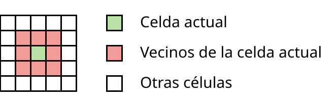
- Los cálculos consisten en cambiar el estado de las celdas en función de sus vecinos según las siguientes reglas:
- Si una celda estaba vacía, entonces se llena si y solo si tres de sus vecinos en el paso anterior estaban llenos, de lo contrario permanece vacía.
- Si una celda estaba llena, entonces permanece así si y solo si dos o tres de sus vecinos en el paso anterior estaban llenos, de lo contrario se vacía.
- Estas reglas se denotan como B3/S23 (Nacido 3 / Sobrevive 2 o 3).
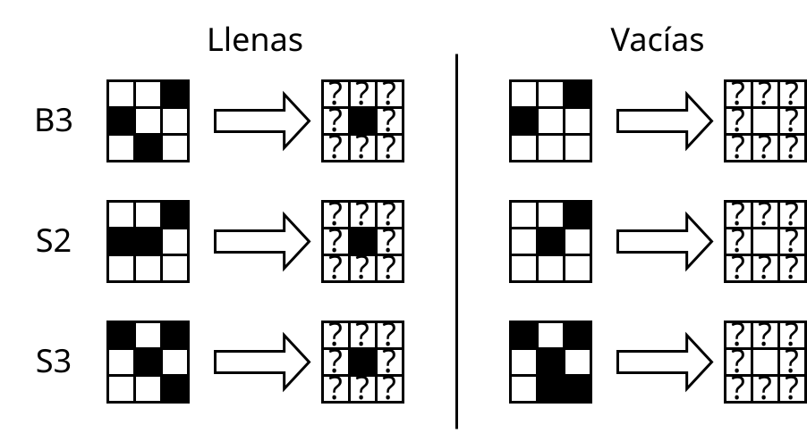
En la siguiente visualización interactiva se puede ver cómo se desarrolla este autómata celular para una distribución aleatoria de celdas llenas y vacías:
Puedes jugar tú mismo en simuladores más avanzados, por ejemplo en conwaylife.com [10].
#2Capacidades impresionantes
En este autómata se puede construir un gran número de mecanismos. Aquí hay algunos de ellos.
El primer ejemplo es el planeador de la visualización anterior. Este mecanismo se mueve en diagonal. Se puede decir que es un análogo del fotón.
También se puede crear un generador de estos planeadores:

El autómata celular "El juego "Vida"" es Turing-completo, es decir, se puede construir una computadora o una máquina de Turing sobre él. Aquí hay un ejemplo de ella (fuente con simulación interactiva [11]):

png
En la visualización interactiva oimo.io/works/life [12] (funciona también con el teléfono) el juego "Vida" se simula sobre sí mismo tanto en el interior, infinitamente pequeño, como en el exterior, infinitamente grande:

png
John von Neumann inventó un autómata celular y un mecanismo en él que puede autorreplicarse. En la imagen de abajo se muestra cómo el segundo autómata prácticamente ha terminado de construir el tercero; las líneas que van hacia la derecha son la información genética que se copia junto con el cuerpo de las máquinas.

png
Tim Hutton [13] desarrolló una química artificial en la que diseñó elementos y sus interacciones para ensamblar una célula artificial capaz de reproducirse:
Este no es un autómata celular, pero es muy fácil ponerlo sobre sus rieles y el autor continúa desarrollando esta idea en forma de autómata celular [14]:

png
Te mostré todo esto para convencerte de que los autómatas celulares no son solo juguetes, sino conceptos serios que merecen ser una analogía con la física fundamental.
#2Analogía con la física
Los autómatas celulares son excelentes ejemplos de "física de juguete" que entendemos de abajo hacia arriba. En el mundo real observamos fenómenos complejos y solo podemos especular sobre los principios subyacentes (eso es lo que hacen los físicos). En el mundo de los autómatas celulares es todo lo contrario: se conocen los principios subyacentes y el comportamiento de los sistemas complejos es objeto de investigación.
El autómata "El juego "Vida"" tiene muchas propiedades interesantes:
- Las leyes de la física y la materia están separadas.
- La materia se puede editar como se desee: dibujar, copiar, pegar, eliminar.
- Se puede ejecutar una simulación sobre cualquier materia modificada.
- Existe algún momento inicial en el tiempo.
- El tiempo es el cálculo de las leyes de la física, y el momento en el tiempo es una sección discreta del estado del campo.
- Las leyes de la física son locales, es decir, funcionan solo sobre una cierta área del espacio, no hay acción a distancia, y gracias a esto surge naturalmente la velocidad máxima permitida, un análogo de la velocidad de la luz en nuestro mundo.
Pero este autómata también tiene diferencias con nuestra física:
- No hay leyes de conservación (por ejemplo, el número de celdas), pero para aquellos que las aman, se pueden encontrar autómatas celulares con leyes de conservación.
- El tiempo solo se puede simular hacia adelante (no hacia atrás) porque los momentos pasados pueden ser de 0 a infinito. Esto no es necesariamente una propiedad de nuestra física, nuestra física puede ser reversible (y también existen autómatas reversibles).
A continuación se supondrá que nuestra física en su base es algo así como un autómata celular (con grandes suposiciones, pero en defensa de esto, desarrollaré este tema más adelante). Es decir, a ella se aplican las propiedades descritas anteriormente.
Incluso si nuestra física no se parece a un autómata celular, este es un buen punto de partida porque entender cómo es diferente también es bueno.
#Experimento mental con simulación física
#2Descripción del experimento
Supongamos que llega un futuro muy lejano en el que nos convertimos en una civilización que utiliza toda la energía de la Galaxia y construimos una computadora del tamaño del sistema solar que utiliza cada longitud de Planck de la manera más eficiente posible.
Luego desarrollamos las reglas de alguna simulación física simple, creada a imagen y semejanza de nuestra física, pero que no la copia exactamente. Esto es necesario porque nuestra física es muy redundante y extraña con toda esta mecánica cuántica y teoría de la relatividad. Desarrollamos esta física de modo que su química pueda ser lo suficientemente rica como para que la vida potencialmente pueda existir y autogenerarse en ella.
Como queremos ejecutar esta simulación en una computadora, tenemos algunas limitaciones. Nuestra simulación debe ser:
- Discreta,
- Finita,
- Determinística,
- Detenible (para cada paso).
También quiero imponer la restricción de que solo podemos intervenir en la simulación en las condiciones iniciales y nunca más.
Antes de entrar en la esencia del experimento, aclaremos cada término.
#2Física discreta
Se conocen dos tipos de espacios: el continuo y el espacio discreto.

png

png
Un espacio discreto de longitud finita se puede dividir en un número finito de elementos elementales. Un continuo de longitud finita contiene tantos números como el segmento (-∞; +∞), es decir, es infinitamente divisible, y cada número tiene un número infinito de decimales.
Obviamente, es imposible meter un continuo directamente en una computadora. Por lo tanto, todas nuestras simulaciones operan con un número finito de objetos discretos. Cuando simulamos la física, usamos aproximaciones discretas.
Sin embargo, existe una relación interesante entre la discretización y el continuo. Por ejemplo, las leyes sobre el funcionamiento de las ondas (oscilaciones, período) se basan en la idea de que el material en el que se propagan estas ondas está formado por un continuo. Pero sabemos que todos los líquidos, gases y sólidos están formados por átomos discretos, solo que hay una gran cantidad de ellos. Por lo tanto, algunas leyes físicas continuas, aunque son hermosas, en realidad son solo una aproximación de lo que funciona en una base discreta.
De manera similar, se puede suponer que la mecánica cuántica funciona de manera similar, pero esto es solo una suposición y no es necesariamente cierto. En nuestro experimento mental, queremos tener una física que sea discreta en su base, pero que no rompa la posibilidad de que a gran escala pueda parecer continua.
#2Física finita
Aquí todo es simple: el espacio de nuestra simulación debe ser finito porque no podemos operar con un número infinito de objetos. Para nuestro experimento, simplemente podemos tomar una gran distancia y eso será suficiente.
#2Física determinista
Determinismo es la propiedad de los procesos que significa que el proceso siempre dará un solo resultado para las condiciones iniciales dadas, sin importar cuántas veces se ejecute.
El determinismo significa que el futuro de la simulación está definido de forma inequívoca y no hay ninguna aleatoriedad fundamental en él. Este es un requisito lógico, porque las computadoras solo pueden realizar cálculos deterministas y no saben de aleatoriedad absoluta.
Algunos pueden decir que las carreras de datos, la memoria no inicializada y los rayos cósmicos pueden ser una fuente de aleatoriedad absoluta. Acordémonos de que todo el código en el experimento mental se ejecuta en una máquina virtual de un solo hilo en un entorno ideal y toda la nueva memoria asignada para ella se pone a cero previamente. Por lo tanto, solo discutiremos las simulaciones deterministas.
Los procesos en nuestro mundo parecen deterministas, aunque nos cuesta mucho predecir algunos eventos. Los procesos deterministas también pueden ser caóticos. Así que un mundo determinista puede ser similar al nuestro y este requisito no resta valor a nuestra simulación física.
También hablaremos sobre la simulación de procesos completamente aleatorios en los siguientes capítulos.
#2Física detenible
Esto de ninguna manera significa que deba haber un paso después del cual la simulación deba detenerse (por ejemplo, muerte térmica), sino que cada paso de la simulación debe completarse en un número finito y predecible de pasos. Esto significa que dentro del cálculo de un paso de simulación no debe haber ciclos infinitos ni nada parecido. Este requisito es necesario porque no tiene sentido ejecutar una simulación que puede entrar en un ciclo infinito en algún punto interesante y luego no producir ningún resultado.
Y también este requisito es necesario porque no queremos resolver el problema de la detención [16] (un buen video sobre este tema [17]), que en general es imposible de resolver.
#2Ejecución de la simulación
Parece que la creación de tal física no debería ser imposible. Por lo tanto, en el experimento mental encontramos un candidato adecuado. Aunque tú eres libre de no estar de acuerdo en que la creación de tal física sea posible.
Luego ejecutamos esta física sobre un espacio finito en nuestra supercomputadora y esperamos a que la vida se genere espontáneamente allí. Si no surge, podemos jugar un poco con las condiciones iniciales, encontrar la cantidad óptima de átomos necesarios o colocar una nube de gas y polvo a la distancia adecuada de su estrella para que esté en la zona habitable y así sucesivamente.
Supongamos que pudimos encontrar esas condiciones iniciales en las que surge la vida y luego simulamos durante mucho tiempo y esperamos a que evolucione hasta seres inteligentes capaces de comunicarse entre sí usando algún tipo de lenguaje.
Estos seres seguramente tienen algún tipo de instinto de autoconservación, atracción sexual, placer por la comida y sufrimiento por daños corporales. Porque esta es una vía de evolución lógica para seres individuales con cerebro. Los seres sin esto probablemente serán menos efectivos en la supervivencia y serán eliminados por la evolución.
Por favor, detente y responde a las siguientes preguntas. Sería bueno que también explicaras tus respuestas.
¿Crees que estos seres sienten que viven? ¿Observan su mundo? ¿Tienen experiencias subjetivas, también conocidas como cualia? ¿Están vivos?
Si no crees que sienten algo, entonces sugiere qué propiedades debe tener la simulación para que consideres que sienten.
La respuesta a esta pregunta depende de cómo percibas la narración posterior.
Describí esta simulación con tanto detalle para acercar tu visión de estos seres lo más posible a la de los humanos, pero sin usar directamente nuestro mundo, porque no se sabe qué tan bien podemos simularlo. Y la esencia principal es que todo lo descrito parece hipotéticamente posible. Porque hasta ahora no hemos encontrado ninguna ley fundamental que prohíba a los seres en una simulación física tener razón o sentimientos.
Espero que hayas respondido afirmativamente a la pregunta de si estos seres sienten algo. El argumento "no sienten nada simplemente porque yo sé que están en una computadora" es demasiado vago. Necesitas tratar de refutarlo de manera más inteligente.
Si no estás de acuerdo, no te preocupes. Más adelante consideraré este punto de vista.
Supongamos que estás de acuerdo en que estos seres están vivos, que sienten que viven, pueden comunicarse sobre este tema y preguntarse sobre Dios o si viven en una simulación. No influimos en su mundo de ninguna manera, por lo que no pueden entender quiénes somos y no tienen motivos para dudar de la realidad y la honestidad de su mundo físico.
¿Es posible el origen espontáneo de la vida en una simulación?
#2¿Qué pasa si detenemos la simulación?
¿Crees que pasará algo si detenemos la simulación? ¿Morirán los seres dentro de ella? ¿O no morirán, sino que dejarán de sentir su vida? ¿O seguirán viviendo de alguna manera maravillosa?
Por supuesto, dirás que morirán, porque ¿cómo no? Cuando los simulamos, viven, cuando los apagamos, no viven. Todo es simple. Pero no. Afirmo que después de apagar la simulación, estos seres seguirán viviendo.
Como ya dije, nuestra simulación tiene algunas limitaciones fundamentales, sin las cuales no podemos ejecutarla en una computadora, a saber, el determinismo. El determinismo significa que solo existe un resultado para un programa dado, si se establecen las condiciones iniciales y no hay ninguna intervención adicional en el programa. Y ahora esta pregunta: si el futuro es único, ¿por qué necesitamos simularlo? ¿Qué cambia por el hecho de nuestra simulación? No podemos influir en el futuro de ninguna manera, de todos modos será como será.
Si esto no es suficiente para darse cuenta del poder del determinismo, aquí hay un par de experimentos mentales más:
- Si eliminamos todo el resultado de la simulación y la volvemos a simular desde el principio, obtendremos exactamente el mismo resultado.
- Si ponemos la simulación en pausa y la continuamos dentro de mil millones de años, los seres dentro no lo notarán. El flujo del tiempo para ellos estará dictado por las leyes internas de su universo. Existimos fuera de su tiempo y ellos fuera de nuestro tiempo.
- Si ejecutamos esta misma simulación simultáneamente en varias computadoras, nada cambiará para los seres.
- Si la simulación es reversible y de alguna manera obtenemos un momento muy lejano del futuro, entonces el hecho de que lo simulemos hacia atrás no hará que los seres sientan que viven hacia atrás.
Por supuesto, esto puede no ser suficiente y más adelante mostraré cómo se puede demostrar que seguirán vivos incluso con el requisito de simular su mundo.
#El universo como un número
Bueno, estamos de acuerdo en que los seres están vivos cuando los simulamos en una computadora y que no es suficiente para nosotros que tengan un solo futuro. Creemos que su futuro solo existe después de que lo hayamos simulado.
Entonces, especifiquemos exactamente lo que tenemos para decir que esto es evidencia de que vivieron durante ese período de tiempo. Todo lo que tenemos es el algoritmo de la simulación y todos los pasos de la simulación hasta el actual. Creemos que el hecho de que exista esta información es equivalente a la evidencia de la vida de estos seres.
Supongamos que hicimos esta simulación, obtuvimos todos los datos y los grabamos en un disco duro grande: primero el algoritmo, luego el paso 1, luego el paso 2, ..., el paso N. Eso es todo, ahora tenemos evidencia de que vivieron hasta el paso N. Pero los datos en un disco duro siempre son alguna secuencia de ceros y unos. Podemos tomar los datos del disco duro y escribirlos como un número natural muy grande. Y este número natural sigue siendo evidencia de la vida de estos seres.
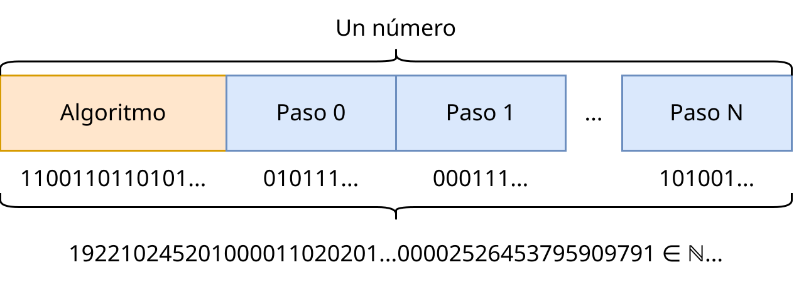
Ahora viene la parte interesante: sabemos que todos los números naturales existen.
Dado que todos los números naturales existen, seguramente habrá un número con el que codificamos la simulación de los seres que simulamos. Pero también existe esta misma simulación, pero con el momento en el tiempo +1. Y también existe cualquier otra simulación para cualquier momento en el tiempo dentro de esta simulación. Y todos estos números son equivalentes a la evidencia de la vida de algún ser que contiene estas simulaciones.
De lo que concluimos que el resultado de cualquier simulación que se pueda ejecutar en una computadora ya existe como un número natural. De ahí proviene el nombre de este concepto: universo como un número.
Existencia para sí mismo es cuando un universo existe para sí mismo, si los seres vivos dentro de él pueden observar su propia existencia y su universo.
Anteriormente acordamos que los seres en una simulación en una computadora pueden observar su propio universo. Esto significa que este universo al menos existe para sí mismo. Y luego llegamos al hecho de que esta existencia es equivalente a la existencia como un número. Por lo tanto, de la existencia de todos los números naturales se deduce la existencia de todos los universos simulados posibles para sí mismos. Y esto significa que en todos esos universos donde hay vida, esta vida observará su universo.
Me gusta este ejemplo con la simulación física porque no tenemos que dar una definición de existencia para él, sino que es tan obvio que tenemos que derivar la definición de existencia a partir de él. Y en este caso, derivamos la definición de "existencia para sí mismo". Si estamos de acuerdo en que sienten su vida dentro de la simulación cuando la ejecutamos en una computadora, entonces debemos concluir inmediatamente que sintieron la vida sin nuestra simulación, existiendo como un número.
Entonces, ¿qué pasa cuando simulamos algún mundo? En este sentido, se puede decir que con la simulación no creamos un mundo, sino que observamos uno que ya existe. Y la potencia informática se gasta precisamente en la observación. Y la selección de condiciones iniciales no es "creación del mundo", sino la búsqueda de un mundo con las propiedades que nos interesan entre un conjunto infinito de mundos muy diversos.
Y cuando detenemos la simulación, los seres siguen viviendo para sí mismos. Pueden decirles esto a otros seres en su universo, pero no a nosotros. No podemos observarlo porque hemos apagado la simulación.
#2Principio antrópico
Principio antrópico es un principio según el cual el universo está tan perfectamente ajustado para el surgimiento de la vida y el hombre como observador precisamente porque en otros universos que no están tan ajustados, el observador es imposible.
Unasanu concuerda perfectamente con el principio antrópico. Para mí, lo formulo así: si existen todos los universos posibles, entonces los observadores solo surgen en aquellos universos donde es posible su surgimiento.
El principio antrópico es necesario porque los físicos observan que las constantes más fundamentales están perfectamente ajustadas para nuestra existencia. Si algunas de ellas fueran un poco más pequeñas o más grandes, la vida tal como la observamos sería imposible. Puedes leer más sobre esto en el libro "Nuestro universo matemático" [18].
#2Argumento de los cálculos incorrectos
Se puede objetar: ¿de dónde vienen los cálculos si solo tenemos números? Porque puedo tomar cualquier universo calculado correctamente y escribirlo incorrectamente, y eso también existirá como un número. Entonces, ¿por qué los cálculos tienen que existir?
#3Cálculo por todas las leyes de la física
Hay otro punto similar. Si el universo se puede calcular según las leyes de la física actuales, ¿por qué no se calcula según otras leyes de la física? En realidad, se calcula, y según unasanu, esos mundos existen. Tomemos como ejemplo la analogía con el juego "Vida". La siguiente ilustración muestra cómo se calcula el mismo campo con diferentes reglas:
Intenta presionar "Inicio" y presionar el botón "Copiar con B3/S23" cada segundo. Verás que cualquier estado de B3/S23 se puede calcular con cualquier otra regla, y eso existe en el marco de unasanu.
Y esto es solo una pequeña parte de lo que es posible (lo que es posible con la notación B/S), pero en realidad existen infinitas formas de calcular el siguiente paso de un campo como este con celdas que tienen dos estados.
Obviamente, este campo se puede tomar como base para el cálculo con todas las reglas posibles. Y así con cada momento en el tiempo y cada regla que se pueda construir.
Todo esto existe de acuerdo con unasanu y tiene muchas consecuencias que se discutirán más adelante.
Entonces, ¿por qué no observamos que nuestro universo se calcula con leyes de la física arbitrarias y, en general, observamos algún tipo de cálculo?
#3Filtración antrópica
Esto se puede explicar por el hecho de que es precisamente el observador quien mantiene las leyes del universo en estabilidad, asegurando la existencia de los cálculos y las leyes de la física específicas para él. ¿Cómo?
Primero, consideremos el argumento de los cálculos incorrectos. Si el universo no se calcula según ninguna ley, entonces los observadores que lo observen son imposibles. Porque el hecho de observar es un cálculo. Y si el universo está sujeto a leyes, entonces es posible un observador. Por lo tanto, el observador solo puede observar un universo calculable.
Y ahora el argumento sobre todas las leyes de la física posibles, el observador también las mantiene en estabilidad. Más precisamente, solo observa las leyes de la física estables. Porque cuando los átomos del cerebro se calculan con otras leyes de la física, el cerebro puede dejar de funcionar y el observador no observará nada en tal universo.
En cierto sentido, esto se parece al principio antrópico, solo que es más fundamental y ocurre en cada momento del tiempo, no solo al comienzo del tiempo en el momento de la creación del universo. Sugiero introducir un término para esto.
Filtración antrópica es un principio según el cual un observador puede filtrar universos en los que no se realizan cálculos o se realizan incorrectamente, así como filtrar universos en los que su surgimiento o existencia es imposible.
Más adelante veremos que la filtración antrópica es aplicable a algunos de estos argumentos, pero no a otros.
#3Vacío falso
En física, existe un estado de la materia llamado "vacío falso". Su aparición es probable. Si surge en un punto del universo, se propaga en todas direcciones a la velocidad de la luz, destruyendo todo lo que encuentra. Ningún ser humano puede observar la existencia de un vacío falso porque su cerebro funciona demasiado lento y simplemente moriría antes de darse cuenta, y la información sobre el vacío falso no puede superar la velocidad de la luz.
Por lo tanto, el vacío falso es un ejemplo de filtración antrópica. Porque para aquellos universos donde surgió, todos los seres vivos murieron y no se enteraron de ello, y otros universos, que difieren en un átomo, donde este vacío falso no surgió, siguen existiendo. Por lo tanto, el vacío falso es susceptible a la filtración antrópica.
Y si las leyes de la física son filtradas por el observador una vez, en el momento de la creación del universo o en el momento del nacimiento del observador en el universo correcto, entonces el vacío falso es filtrado por los observadores en cada momento del tiempo. Y si los científicos descubren que la probabilidad de que surja un vacío falso en el universo observable es muy alta, pero nunca surge y seguimos viviendo, entonces no hay ninguna contradicción desde el punto de vista de unasanu.
Por cierto, puede ser muy divertido cuando creemos la teoría del todo y de repente resulta que cualquier simulación basada en ella se destruirá después de un tiempo debido a un vacío falso. :)
Si podemos crear una teoría del todo y según ella deberíamos haber muerto hace mucho tiempo por un vacío falso o fenómenos similares de muerte instantánea de todo lo que existe, entonces esto no significa que esta teoría sea incorrecta.
#2Eter nalismo
Algunos de los lectores pueden tener la siguiente pregunta: "¿Y qué pasa con el tiempo?" Anteriormente, asumí implícitamente que los universos junto con su tiempo existen como un pedazo de datos estático, ignorando por completo la dinámica que sentimos debido al flujo del tiempo. Este punto de vista se llama eterno.
Eter nalismo es un punto de vista sobre el tiempo según el cual los eventos futuros ya existen, no existe un "flujo" objetivo del tiempo y todo el espacio-tiempo se puede representar como un "bloque" estático e inmutable [19].
Afirmo que el eterno es la correcta interpretación del tiempo para las simulaciones. En los siguientes capítulos, reduzco nuestro universo a la clase de simulaciones que se pueden ejecutar en una computadora, por lo que el eterno debe ser aplicable a nuestro tiempo. Analicemos el eterno para las simulaciones, ya que es una parte importante de unasanu.
¿Cómo funciona el tiempo para los humanos? Actualmente solo tenemos recuerdos del pasado y una sensación del presente. No podemos sentir directamente el pasado o el futuro. Podemos entender cómo pudo ser el pasado a partir de algunos objetos físicos, como las grabaciones de películas, los artefactos arqueológicos y nuestros propios recuerdos. Tenemos que confiar en todo esto. También solo podemos comunicarnos con personas de nuestro tiempo, porque así lo dictan las leyes de la física. El hecho de que existan personas en el futuro no implica que debamos tener la posibilidad de interactuar con ellas, salvo que vivamos hasta ese momento.
¿Por qué sentimos que el tiempo pasa gradualmente y no sentimos inmediatamente un momento futuro aleatorio, si ya existe? Porque las leyes de la física y la construcción de nuestro cerebro implican que para que el cerebro de una persona de 20 años sienta algo, primero debe vivir esos 20 años y recordarlos. Así que seguramente tú también eres ahora un cerebro de un futuro aleatorio (probablemente justo antes del momento de tu muerte), solo que él recuerda cómo vivió todos los momentos pasados del tiempo y te parece que estás viviendo ahora.
¿Cómo funciona el tiempo en una simulación? En las simulaciones discretas, el estado futuro se calcula atómicamente a partir del estado pasado. Dentro de la simulación, es imposible sentir el tiempo "entre los pasos de la simulación" porque las propias leyes internas de la simulación solo pueden operar sobre un cálculo de estado completado. Es decir, para la simulación no existe ninguna dinámica fundamental, solo existen diferentes momentos estáticos en el tiempo que están conectados por relaciones lógicas, y el observador los interpreta como dinámicamente cambiantes.
Como una variante de la "refutación" del eterno para las simulaciones, se puede suponer lo siguiente: tomemos como axioma que en nuestro mundo el tiempo no se reduce a estructuras estáticas. Entonces, si creemos que existe un tiempo similar al nuestro en una simulación, entonces la única forma de definirlo es vincularlo a nuestro tiempo. Entonces, el tiempo en la simulación fluye junto con nuestro tiempo mientras lo calculamos.
Esto se puede refutar de dos maneras, mostrando que el momento "actual" en la simulación no es el único:
- Creemos una copia de esta simulación y la simularemos con un segundo de retraso. ¿Qué tiempo es "actual"? ¿Qué tiempo sienten los seres dentro de la simulación en este "momento"?
- Existen clases de simulaciones como las "reversibles". Se pueden simular no solo hacia el futuro, sino también hacia el pasado. Por cierto, la mecánica cuántica es reversible, por lo que una simulación de este tipo puede ser muy similar a nuestro universo. Entonces, ¿qué pasa si creamos una copia de esta simulación y comenzamos a simularla simultáneamente hacia el pasado y hacia el futuro? ¿Qué momento será el actual?
Entonces, no podemos refutar la idea de que el tiempo para una simulación de computadora no puede existir como una estructura estática. Incluso se puede decir de otra manera: la simulación no se puede describir con nada dinámico, solo con bloques estáticos. Y no hay paradojas en esto, incluso si se aplica a nuestro universo. Por lo tanto, la principal propiedad del tiempo no es el movimiento constante, sino que conecta diferentes capas de información (temporal) con algunas leyes de la física.
También se puede decir que el tiempo no existe como una estructura global y todas las simulaciones están sujetas a él, sino que, por el contrario, el tiempo existe dentro de las simulaciones.
Y también el eterno es una afirmación indemostrable e irrefutable, porque es simplemente una interpretación del tiempo de los universos deterministas.
También puede parecer que el eterno implica un determinismo absoluto y requiere que el futuro sea único. Pero el eterno es perfectamente compatible con universos con múltiples futuros y con aleatoriedad absoluta, esto se mostrará más adelante. Solo necesitas imaginar el bloque final de "espacio-tiempo" no como una salchicha estática, sino como un árbol estático. :)
#2Interacción con la simulación
A partir de este momento, las restricciones impuestas anteriormente se irán debilitando gradualmente.
Dije que para el experimento mental propongo no interferir en la simulación. ¿Qué pasa si eliminamos esta restricción? ¿La simulación se volverá no determinista? No.
Supongamos que hemos llegado al paso N en la simulación y en el editor de átomos queremos eliminar a los gobernantes totalitarios que están librando guerras. Después de eso, los seres dentro se asombran, pero se regocijan. Pero, ¿qué es esa intervención en la simulación? Es una secuencia de acciones que se envía al programa de simulación. Y esto significa que esta secuencia de acciones también se puede codificar como un número.
Si registramos todas nuestras intervenciones y luego las escribimos junto con el programa y decimos que se envíen en el momento adecuado de la simulación, entonces podemos obtener nuevamente una simulación completamente determinista. Que se puede ejecutar una y otra vez y dará el mismo resultado, aunque interpretemos su resultado como una intervención.
Y todas esas posibles intervenciones también se pueden codificar como un número y escribir junto con el número del programa de simulación regular. Por lo tanto, todos los universos posibles con todas las posibles intervenciones también existen, incluso sin necesidad de intervenir directamente en ellos.
Al mismo tiempo, no hay que olvidar que así como existen universos con todas las posibles intervenciones, también continúa existiendo un universo sin ninguna intervención.
#2Estructuras matemáticas de Tegmark
Anteriormente asumí que la simulación tiene la siguiente estructura:
- Hay algún estado inicial
Ode esta simulación. - Hay una función/programa para calcular un paso
Fque para cada estado de esta simulación devuelve el siguiente estado de esta simulación, y la respuesta existe siempre. - La esencia de la simulación es realizar el siguiente algoritmo:
- T = F(O)
- T = F(T)
- T = F(T)
- ...
Así, dentro de la simulación "fluye el tiempo" porque equiparamos un paso del tiempo de cálculo con un paso del tiempo dentro de la simulación. Y el tiempo existe globalmente en todo el universo.
Pero en realidad, esta interpretación del tiempo es ingenua y no permite la existencia de universos mucho más complejos, por ejemplo:
- Universos con tiempo multidimensional (un buen artículo sobre este tema [15]),
- Nuestro universo con la teoría de la relatividad,
- Universos con viajes en el tiempo.
Modelo de tiempo ingenuo es un modelo de tiempo en el que el tiempo es discreto y existe globalmente en todo el universo y el siguiente paso siempre se puede calcular a partir del anterior.
Por lo tanto, entra en escena la hipótesis del universo matemático [1] de Max Tegmark, donde aborda este tema de manera más fundamental, afirmando que en el sentido físico existe cualquier universo descrito por una estructura matemática.
Estructura matemática es un conjunto de entidades abstractas con relaciones entre ellas.
Se sabe con certeza que todas las simulaciones ingenuas son un subconjunto de las estructuras matemáticas, ya que el resultado del trabajo del programa establece una entidad abstracta, y el propio programa define la relación entre estas entidades. También se sabe con certeza que el conjunto de estructuras matemáticas incluye universos para los que se puede verificar mediante cálculos que sus partes del espacio-tiempo satisfacen sus propias leyes. Por lo tanto, en tal concepto, los cálculos no son necesarios para observar el mundo (calcular sus pasos), sino para verificar que algún mundo satisface sus propias leyes, o para especificarlo.
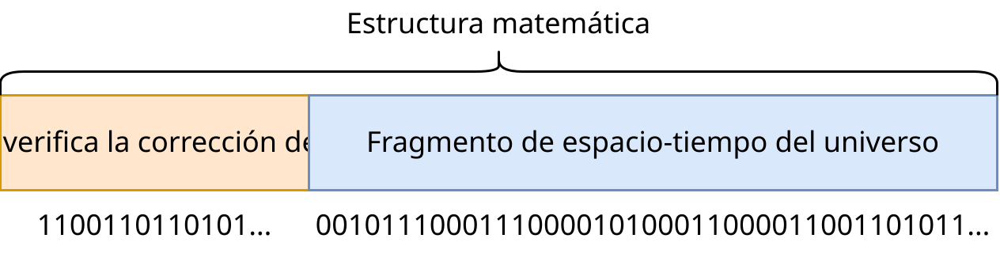
Probablemente, esta descripción no sea muy clara, por lo que quiero mostrar un ejemplo de un universo que parece que se calcula de manera ingenua, pero que en realidad no lo es. Un ejemplo explícito: viajes en el tiempo con la imposibilidad de cambiar el pasado. Conozco dos buenos ejemplos de esto: los libros sobre Harry Potter y la película "Tenet". Imagínate cómo simularías un mundo donde es posible viajar en el tiempo, pero está hecho de tal manera que el pasado permanece inmutable. Tendrías que simular el pasado teniendo en cuenta el futuro, y el futuro teniendo en cuenta el pasado, y deben coincidir. Todavía no tenemos formas de calcular universos con leyes de viajes en el tiempo como estas, por lo que la única opción posible es probar todos los mundos posibles (con todos los futuros y pasados posibles) y comprobar cuáles de ellos satisfacen las leyes necesarias. Es decir, todo el mundo se puede calcular solo en formato "todo el tiempo a la vez". Pero los seres en un mundo así obviamente sienten que viven y se asombran de sus leyes de viaje en el tiempo. Puedes leer más sobre esto en el artículo "Universos causales" [20].
Por cierto, existe un artículo titulado "El universo no es una computadora" [21], que sugiere una forma diferente de ver la forma de describir la física y sugiere un enfoque para el cálculo "todo el tiempo a la vez".
Otro ejemplo de un universo no ingenuo es nuestro universo con la teoría de la relatividad. No tenemos un tiempo global único. En cada parte del espacio, el tiempo fluye a una velocidad diferente. Por lo tanto, todo el universo debe presentarse como un bloque espacio-temporal, donde el tiempo es solo la relación entre las partes de este bloque.
En ambos ejemplos, los universos se pueden aproximar a la ingenuidad local. Para el primer universo, ignoramos el viaje en el tiempo, y para el segundo, ignoramos la dilatación del tiempo. Debido a esto, continuaré razonando en términos de simulaciones ingenuas, porque es más simple y se aproxima bien a muchos tipos posibles de estos universos, si no a todos. Pero esto puede ser un error.
¿Se reducen nuestras leyes de la física a la ingenuidad local?
¿Qué pasa si nuestro universo no se puede calcular de manera ingenua y no se puede aproximar a cálculos ingenuos ni siquiera localmente? Esto afectará muchas conclusiones de este artículo.
Desarrollar un formato para describir universos calculables como "estructuras matemáticas". Determinar si es posible escribir nuestro universo en tal formato.
#2Principio de construcción
Si existen todos los universos posibles, ¿existe el universo de El señor de los anillos, de Star Wars, los universos de los que se habla en el anime? Para responder a estas preguntas, introduzco el siguiente principio.
Principio de construcción es que si se propone un método para construir un universo y sus leyes de la física, entonces ese universo existe.
Por ejemplo, si tenemos un programa para simular nuestro universo, entonces (en teoría) podemos tomarlo y construir un mundo donde la mitad de la gente del momento actual es reemplazada por átomos de aire. Por lo tanto, tal universo existe físicamente y alguien siente que vive en este absurdo.
Aquí, "construir" significa que tomaremos un programa como "Editor de átomos 11D Ultra", cargaremos nuestro momento actual en él, editaremos y continuaremos simulando el conjunto resultante de átomos desde el momento editado.
¿Se puede crear el universo exacto de El señor de los anillos de manera similar? Con una gran probabilidad, no. Para empezar, las leyes de la física para tal universo deberían ser aproximadamente las mismas que las nuestras, con algunas modificaciones para que exista la magia, pero no está claro si se pueden encontrar esas leyes de la física. Luego, nos gustaría que ese mundo surgiera de forma independiente, como el nuestro, con el Big Bang, la evolución, etc. Esta es otra gran limitación que interferirá con la búsqueda de tal universo. Luego, queremos que el universo repita completamente la trama. Quizás incluso que todos los seres vivos se vean como en la película. En general, todas estas restricciones finalmente se verán como un enorme sistema de ecuaciones para el estado inicial del universo. Y como sabemos, no todos los sistemas de ecuaciones tienen soluciones. Simplemente porque si graficamos sus gráficas, no se cruzarán. Como en el siguiente ejemplo:

png
Aquí, cada punto es un universo y la gráfica muestra el universo que satisface una condición. El universo de El señor de los anillos está formado por muchas condiciones, por lo que este universo debe ser la intersección de todas las gráficas de todas las condiciones.
Pero aquí hay puntos que están más cerca de todas esas condiciones:
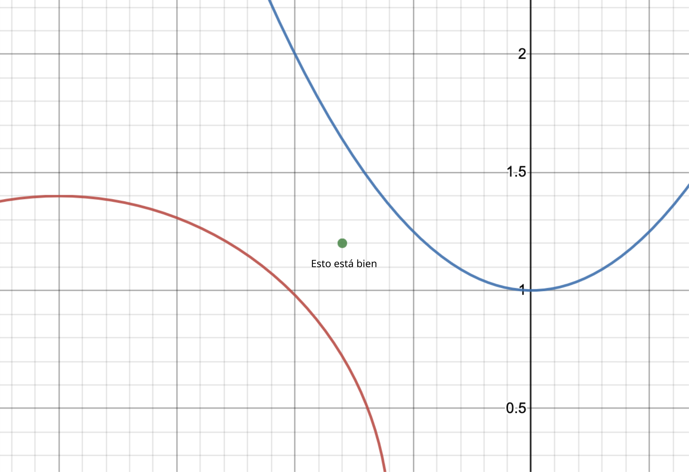
Y esto significa que podemos encontrar universos que satisfacen aproximadamente nuestras condiciones.
Por lo tanto, es poco probable que el universo de El señor de los anillos exista con la precisión absoluta con la que se describe en los libros o se muestra en las películas, con todos nuestros requisitos imaginables o inimaginables. Pero seguramente existen universos cercanos a él, a los que no se les han impuesto tantas restricciones, y cuantas más concesiones hagamos, más natural será el resultado, más amplio será el espectro de esos universos. Tal vez incluso resulte que un universo más natural sea mucho más interesante que el universo de El señor de los anillos, por lo que la pérdida no es grande.
Pero nada nos impide construir un universo de los que se habla en el anime. Podemos tomar algún mundo existente en la Edad Media con gente, luego insertar una persona del futuro después de su muerte, simular ese universo más adelante y ver qué pasa. Así que en este sentido, los universos de los que se habla en el anime no son imposibles. Aunque, de nuevo, es poco probable que exista una réplica exacta de tu anime favorito.
En este capítulo, asumí implícitamente que nuestro universo se puede simular en una computadora y que está sujeto a unasanu. Pero esta es una pregunta aparte y grande que discutiremos más adelante. Por ahora, asumiré esto implícitamente para facilitar la comprensión. Siempre puedes extrapolar estos ejemplos a otros universos que están sujetos a unasunu.
Y también el principio de construcción es el principal candidato para la refutación, porque aún no conocemos la teoría del todo para poder decir si existe alguna combinación de átomos o no. ¿Qué pasa si no podemos crear una copia de nuestro universo donde la mitad de la gente es reemplazada por aire? ¿Qué pasa si esto contradice algunas leyes? Para universos ingenuos simples como el juego de Conway "Vida", podemos afirmar esto, pero es poco probable que sea válido para todos los tipos de universos.
Y por supuesto, el principio de construcción no se puede aplicar en algunos casos si nuestro universo no se calcula de manera ingenua.
En resumen, según unasanu no existen todos los mundos imaginables, sino todos los construibles.
#2Independencia del sustrato
Si te parece sorprendente que los universos se puedan calcular con números naturales, entonces quiero mostrarte un principio que lo hace más verosímil.
Independencia del sustrato es la propiedad de los cálculos que significa que su resultado no depende de dónde se realicen estos cálculos.
Independientemente de cómo se calcule el universo en el que te encuentras, no lo sentirás. Por lo tanto, no parece sorprendente la posibilidad de calcular con números estáticos.
Creo que esta es una de las propiedades más poderosas de los cálculos. El resultado de los cálculos deterministas no depende del sustrato Turing-completo en el que los calculamos:
- En una computadora,
- En la máquina analítica de Babbage,
- En una computadora viviente formada por un ejército de 30 millones de personas (¡saludos, Liu Cixin!),
- En Redstone del juego Minecraft,
- O si algún ser inmortal realiza estos cálculos en un autómata celular 110, moviendo guijarros según reglas simples (el autómata 110 es Turing-completo [22]).
Sí, estoy citando xkcd
La imagen es clicable.

png
#2El hecho del cálculo es una interpretación del observador
Supongamos que postulamos que solo existen aquellos universos que se simulan explícitamente en nuestras computadoras.
Supongamos el siguiente experimento mental: lanzamos una simulación de este tipo, y los seres virtuales viven su propia vida, y luego la humanidad se extingue, y miles de millones de años después, los extraterrestres llegan para ver lo que está sucediendo. ¿Qué pasa si no pueden comprender hasta el final de los tiempos qué cálculos se realizaron en esta computadora? ¿Dejará de existir el universo virtual por esto? ¿Y qué pasa si hay un gran número de computadoras en el universo que producen todas las simulaciones posibles, solo que no hemos encontrado la interpretación correcta para ellas?
#2Por qué existen todos los números naturales
El siguiente argumento que se puede presentar contra unasanu: ¿por qué todos los números naturales deberían existir por sí mismos? ¿Qué pasa si el universo simulado solo existe porque el número que lo codifica está en nuestra computadora?
Para empezar, los números naturales son lo más natural, obvio y simple posible. Me resulta mucho más fácil creer en la existencia de números naturales en sí mismos que en la existencia de números reales con un número infinito de decimales.
Pero incluso si esto no es suficiente y creemos que solo existen aquellos números que se codifican en algún objeto físico, incluso en nuestro universo finito existe un número suficiente de números. Por ejemplo, podemos tomar cualquier piedra de la calle y escanearla capa por capa, luego podemos recopilar todas las imágenes en un solo número muy grande. Podemos escanear cada piedra desde una gran cantidad de ángulos. Podemos mezclar todas sus fotos en una secuencia diferente para obtener aún más números.
Obtendremos aún más números si consideramos la creación de números largos combinando muchos números de piedras escaneadas desde diferentes ángulos. Podemos tomar un número increíble de permutaciones del orden de las piedras y podemos elegir el ángulo más diverso para cada piedra. Por lo tanto, seguramente se puede encontrar cualquier número posible hasta un cierto tamaño en nuestro universo.
Esto significa que en nuestro universo se codifican muchos universos ya calculados. Incluso se puede decir que la existencia de nuestro universo implica la existencia de un gran número de otros universos. Antes, yo mismo demostraba la existencia de otros universos de esta manera y lo llamaba "la idea de la generación de mundos", pero ahora encuentro los números naturales más fundamentales y no necesito tales cosas.
Por cierto, la teoría del polvo de Greg Egan [2], que describió en su novela "Ciudad de las permutaciones", se formula de manera similar.
#2Tiempo infinito y memoria infinita
Se puede demostrar que las simulaciones que existen como números tienen acceso a memoria infinita, tiempo infinito y, en consecuencia, capacidades computacionales infinitas.
Para empezar, ¿cómo se logra el tiempo infinito? Si en el código de la simulación no limitamos de ninguna manera la existencia del siguiente paso, es decir, para cualquier paso actual siempre existe el siguiente, entonces para cualquier número que codifique los pasos del 1 al N, siempre se puede construir un número que codifique los pasos del 1 al N + 1. Por lo tanto, aquí el tiempo no está limitado de ninguna manera y el universo como simulación puede existir infinitamente.
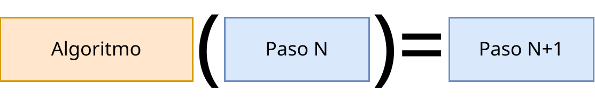
Debido a la infinitud del tiempo, se puede lograr una velocidad de cálculo arbitrariamente grande, simplemente colocando la consciencia que observa los cálculos en pausa.
La memoria infinita es un poco más complicada. Supongamos que por memoria entendemos la longitud del número que codifica el paso actual. Por ejemplo, nuestro código está escrito de modo que el algoritmo verifica si el paso anterior pertenece al actual. Entonces, cuando solicitamos memoria, encontramos el siguiente número y el algoritmo verifica si este número es el que necesitamos. Cuando no hay suficiente memoria, el algoritmo puede rechazar el número que codifica esta simulación. Cuando hay suficiente memoria, el algoritmo la acepta. Entonces, sin importar cuánta memoria solicitemos, siempre habrá un número que contenga la cantidad de memoria necesaria.
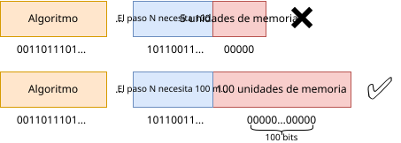
Por lo tanto, sería más correcto decir que se puede solicitar tanta memoria como se desee, pero siempre una cantidad finita.
La infinitud del tiempo y la memoria son propiedades muy agradables que se utilizarán activamente más adelante.
#¿Se aplica esto a nuestro universo?
Anteriormente, no en vano impuse tantas restricciones a la simulación y en el ejemplo del experimento mental utilicé una física alternativa, calculable. Todo porque no se sabe qué tan capaz es nuestro universo de existir dentro de una computadora, qué tan calculable es. El problema no es solo que no conocemos la teoría del todo para responder a esta pregunta, sino que ahora conocemos algunos fenómenos que parecen refutar esta posibilidad. Analicemos los problemas conocidos.
¿Son calculables nuestras leyes de la física?
#2Simulación de un universo infinito
Supongamos que nuestro universo es infinito. Si es así, ¿es imposible calcularlo en una computadora? No, porque tenemos una limitación en la velocidad máxima de propagación de la información: la velocidad de la luz.
Pensemos en qué cálculos necesitamos realizar para obtener el planeta Tierra en el momento actual. Necesitamos tomar una porción finita del espacio desde el Big Bang y simularla hasta el momento actual. Al mismo tiempo, elegimos una parte inicial lo suficientemente grande como para que la falta de información de los bordes del universo no tenga tiempo de llegar a la Tierra en el momento actual. Por lo tanto, en toda nuestra historia hasta el momento actual, observaremos que llega más información de estrellas más distantes, como si nuestro universo fuera infinito. Pero si permitimos que esta simulación continúe calculando, entonces la información de que hay un borde del universo más allá del cual no se calcula nada puede llegar a la Tierra. No podemos permitir esto, por lo que volvemos atrás y tomamos una parte del Big Bang más grande para poder simular más tiempo, y así cada vez. Anteriormente se demostró que tenemos memoria y cálculos infinitos, por lo que esto no es un problema.
Matemáticamente, la esencia es que para cualquier momento finito T podemos encontrar una porción finita del espacio desde el Big Bang de modo que, al simularla hasta el momento T, la información de que el universo es finito no llegue al observador en el centro de esta porción.
¿Y cómo sabemos cómo estaba organizada la materia elemental en el momento del Big Bang? Todos los posibles estados iniciales existen como un número, por lo que no importa.
Sin embargo, este método no se puede aplicar a universos infinitos sin una limitación en la velocidad máxima. Por ejemplo, no es aplicable a un universo con la gravedad de Newton, donde la gravedad se propaga instantáneamente, es decir, funciona la llamada "acción instantánea". Y un ejemplo de un universo con una limitación en la velocidad de propagación de la información es "El juego "Vida" de Conway, donde la velocidad máxima es de 1 celda por 1 movimiento.
Al mismo tiempo, tenemos la superposición cuántica, que parece que puede transferir información más rápido que la velocidad de la luz. Esto no es un problema, porque esas partículas se crean juntas cerca una de la otra y luego las movemos al punto deseado del universo para obtener información, y como no pueden moverse más rápido que la velocidad de la luz, entonces serán llevadas a una distancia finita del centro condicional en un momento finito T, y entonces para la simulación solo necesitamos tomar una parte más grande para que la información sobre la falta de cálculo en el borde del universo no llegue a la partícula superpuesta.
Este método de simulación es similar a los límites del análisis matemático: cada universo particular será incorrecto después de un tiempo, pero cuanto más adelante, más correcto será, y el límite de esta secuencia es lo que buscamos. Llamemos a esto simulación por el método de transición límite.
Simulación por el método de transición límite es un método gracias al cual se pueden simular universos que poseen algo infinito, aumentando constantemente el tamaño finito de esta cantidad potencialmente infinita.
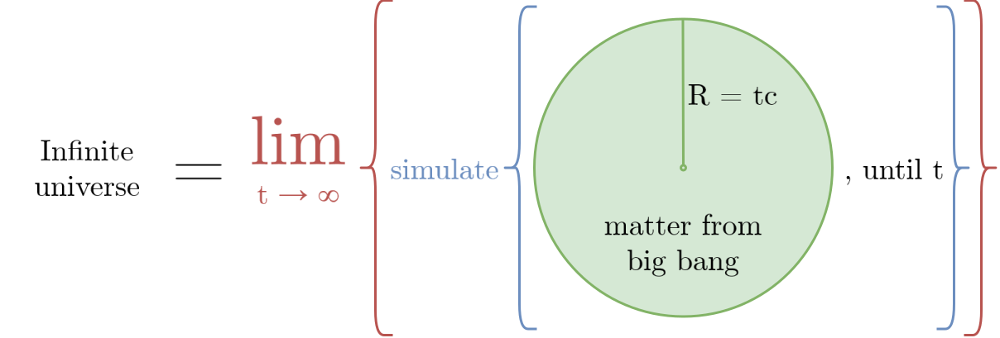
#2Simulación del continuo
Como recordamos, es imposible colocar un continuo en una simulación de computadora directamente. Pero entonces, ¿cómo es posible que la humanidad pueda calcular simulaciones físicas en las computadoras? La respuesta es la aproximación.
La primera aproximación con la que nos encontramos en la computadora son los números reales. Es imposible almacenar y procesar un número real honesto con un número infinito de decimales. Por lo tanto, los números reales se almacenan de forma aproximada, mediante una sección finita de la memoria. Los dos tipos más utilizados de números reales son de 32 bits (float) y de 64 bits (double), su trabajo está codificado directamente en el procesador. Estos números limitados en los cálculos son susceptibles a errores de redondeo (0.1 + 0.2 = 0.30000000000000004), por lo que todos los métodos que trabajan con ellos se desarrollan para minimizar estos errores y obtener un resultado adecuado a la salida con una cantidad suficiente de dígitos correctos. Obviamente, los números de 64 bits son más precisos que los de 32 bits. También existen bibliotecas para crear números reales lentos de tamaño arbitrario y, en consecuencia, de precisión arbitraria, por ejemplo, 1024 bits, 10000 bits. Estos números se pueden utilizar en cálculos donde la precisión habitual no es suficiente.
En cuanto a los métodos de simulación física, existe el método de los elementos finitos (MEF) [24], que permite resolver numéricamente ecuaciones diferenciales en un espacio determinado con diferentes materiales. Por ejemplo, queremos resolver el problema de la propagación del calor, para el cual existe una ecuación diferencial bastante simple. Para el calor, consideramos que en cada punto del continuo hay un número real que representa la temperatura. Un mecanismo simplificado de su funcionamiento:
- Dividimos el espacio en una cierta rejilla.

png
- Consideramos que en cada vértice de esta rejilla se encuentra el valor real del calor, y que entre los vértices el calor pasa uniformemente de un valor de la rejilla a otro. Así, obtuvimos un continuo de valores de calor, pero este continuo está representado por un número discreto de elementos finitos.

png
- Cada elemento finito se puede escribir con una ecuación simple, y si sustituimos esta ecuación en la ecuación diferencial del calor, entonces podemos obtener un sistema de ecuaciones algebraicas lineales (SEAL) para todo el espacio, que se resuelve fácilmente y para el cual se han desarrollado muchos métodos.

png
- Después de resolver la SEAL, obtenemos el valor del calor en cada punto del espacio en el siguiente momento en el tiempo. Esta no será la solución ideal, pero sí lo suficientemente precisa. Y su propiedad es que cuanto más fina sea la rejilla, más precisa será.

png

jpg
¿Es posible simular nuestro universo con el método del MEF? Totalmente. Solo surge la pregunta de la precisión de los cálculos. Se puede elegir una rejilla con un tamaño, digamos, 1000 veces menor que la longitud de Planck, y parece que esto debería ser suficiente para observar nuestro mundo.
Ahora, la cuestión de la precisión: si nuestro universo se simula con MEF o simplemente es un autómata celular, ¿podemos detectarlo experimentalmente? Teóricamente es posible, para ello necesitamos realizar experimentos con energías increíblemente altas, o observar estrellas muy distantes, o inventar algún conjunto muy complejo de fenómenos. Parece que para todo esto se pueden encontrar artefactos de la discretización del espacio.
Al mismo tiempo, se conserva un principio simple: cualquier experimento dice la verdad solo hasta cierta precisión. Si realizamos un experimento en el que le damos a un protón una energía equivalente a la masa de una galaxia, y luego lo chocamos con otro protón similar y vemos que el resultado de su colisión coincide con la continuidad del espacio, entonces esto nos dice que el espacio parece continuo solo hasta una cierta distancia, incluso si es increíblemente pequeña. Y no está claro si es posible inventar un experimento que funcione solo si el espacio es perfectamente continuo.
¿Es posible desarrollar un sistema continuo en el que sea posible realizar un experimento que demuestre que este entorno está formado por un continuo ideal? Los requisitos para el experimento son los siguientes: que sea posible realizarlo por seres razonables dentro de este entorno, pero que el experimento requiera una cantidad finita de materia y energía y funcione durante un tiempo finito.
Si es así, ¿nuestro universo pertenece a este tipo de entornos continuos?
Bueno, supongamos que nuestro universo se simula usando MEF con una precisión increíble. Pero si esta precisión es finita, entonces podemos realizar un experimento que demuestre que el espacio es en realidad discreto. ¿Es posible una simulación en la que ese experimento sea imposible? Sí, y ahora lo mostraré.
Supongamos que nuestro universo se describe mediante alguna ecuación diferencial y en el modelo estándar cada partícula no está representada por un punto, sino por un cierto campo. Entonces, se puede aplicar MEF a esta ecuación e implementar el siguiente algoritmo:
- Recorrer
kdesde 1 hasta ∞.- La precisión de los números reales es igual a 2k.
- El tamaño de la rejilla espacial es igual a X·2k.
- El tamaño de la rejilla temporal es igual a Y·2k.
- Resolver MEF para todo el universo en la rejilla espacial y temporal especificada usando números reales con la precisión especificada.
Para este algoritmo, resulta que en cada iteración posterior del ciclo k aumentamos la precisión de todos los elementos del algoritmo en 2 veces. Y ahora supongamos que un observador dentro de ese universo quiere realizar un experimento para comprobar qué tan continuo es su espacio (o tiempo). Para cualquier precisión del experimento, siempre habrá un k tal que el resultado de su experimento mostrará que su universo está formado por un continuo. Esta es otra aplicación de la simulación por el método de transición límite.
Esto funciona especialmente bien para el caso de que exista la muerte térmica del universo. Entonces, podemos elegir un k finito para el cual el observador durante todo el tiempo de existencia del universo no pueda realizar un experimento con la precisión requerida.
Este algoritmo también funcionará bien para sistemas caóticos, como el problema de los tres cuerpos o el péndulo doble: para cualquier tiempo t y dicha precisión eps, podemos encontrar un k tal que la precisión de las coordenadas en este momento sea comparable con eps.
Por lo tanto, en cierto sentido, los universos con un continuo o números reales también son calculables, por lo que también existen de acuerdo con unasanu.
Por supuesto, mostré que esto es posible solo para universos que se pueden describir mediante una ecuación diferencial y resolver MEF, y no sé qué otros universos con un continuo son imposibles. Creo que este ya es un problema matemático: determinar qué universos con un continuo son calculables de acuerdo con esta idea, y cuáles no.
Por ejemplo, existe un concepto tan hermoso como la "anidación infinita de la materia" [25], que dice que no hay partículas elementales y que todas las partículas están formadas por sus propios pequeños universos. No estoy seguro de si es posible simular un universo así con este método.
Determinar qué tipos de universos infinitos y continuos se pueden simular con MEF, cuáles se pueden simular por el método de transición límite y si las leyes de la física que conocemos pertenecen a esta clase de universos.
Bueno, o podemos decir que los universos continuos también existen para sí mismos, porque son deterministas, independientemente de qué tan bien se puedan simular.
Sin embargo, surge una pequeña pregunta aquí. Si los números reales son estrictamente más que los naturales, entonces, ¿cómo es posible que hayamos podido meter los universos continuos en los números naturales? La respuesta es simple: los números reales calculables forman un conjunto contable. El resto de los números reales, que forman este conjunto, son más que los naturales, no son calculables. Puedes leer más sobre esto en Wikipedia: "Número computable" [26].
Por cierto, mi método de transición límite se parece un poco a la definición de "números alcanzables" (approachable number) no calculables, que se definen como el límite de una función calculable. Tomé este concepto del artículo "Un número definible que no se puede aproximar algorítmicamente" [27]. Curiosamente, casi todos los ejemplos conocidos de números no calculables son "alcanzables". Al mismo tiempo, se puede introducir un número real que no solo no sea calculable, sino también inalcanzable.
#2Aleatoriedad absoluta
El siguiente problema de las leyes de la física que conocemos es la mecánica cuántica y su aleatoriedad absoluta con el multiverso. No entiendo muy bien qué problemas específicos presenta la mecánica cuántica en la posibilidad de simularla en una computadora, por lo que asumamos que el único problema que queda es cómo garantizar la aleatoriedad absoluta.
Como recordamos, en la computadora es imposible obtener un número absolutamente aleatorio, solo pseudoaleatorio, que se calcula mediante algún algoritmo, o si la computadora para números aleatorios toma datos del entorno externo. Pero todo cambia drásticamente cuando necesitamos no un solo número absolutamente aleatorio, sino un universo con aleatoriedad absoluta.
Supongamos que tenemos un universo determinista determinado con un solo generador de números aleatorios (GNA) que devuelve un bit absolutamente aleatorio: 0 o 1. Tal universo se puede simular de la siguiente manera: cada vez que se le solicita un número al GNA, simplemente copiamos todo el universo actual y mostramos 1 a una de las variantes del universo, y 0 a la otra. Así, cada nuevo universo pensará que tiene un número absolutamente aleatorio. Y el número de universos aumenta cada vez que se le solicita un número al GNA.
Sí, para simular un universo con aleatoriedad absoluta, necesitamos simular no un universo, sino todas las variantes posibles simultáneamente. Como no tenemos restricciones en la memoria o la cantidad de cálculos, esto no representa un problema. Max Tegmark llama a esto "aleatoriedad subjetiva" y yo tomé esta idea de su libro [18].
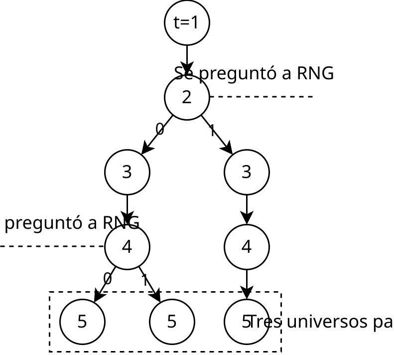
Este es un método muy interesante, introduzcamos un término para él.
Simulación por el método de búsqueda exhaustiva es un método de simulación de un universo que contiene una función no calculable o indefinible, pero esta función devuelve un número finito de valores, por lo que podemos simular este universo simplemente iterando sobre todos los valores de esta función.
Curiosamente, entre todas estas variantes, se encontrará cualquier algoritmo para generar números pseudoaleatorios. Esto es similar a cómo entre todos los números posibles, seguramente se encontrarán aquellos que puedan realizar cálculos.
Por supuesto, en la mecánica cuántica no solo existe la aleatoriedad absoluta, sino que estos universos también interactúan de alguna manera entre sí, por lo que todo es mucho más complejo allí. Sin embargo, parece que teniendo en cuenta lo descrito, es bastante posible calcularlo. Si me equivoco y la mecánica cuántica tiene otras restricciones que prohíben simularla en una computadora, por favor, hazmelo saber.
#2No calculabilidad
La no calculabilidad es la propiedad de un objeto que prohíbe calcularlo en una computadora. Todos los ejemplos conocidos de no calculabilidad requieren números reales con un número infinito de decimales, o la solución al problema de la detención.
Problema de la detención es la tarea de determinar si un programa determinado se detendrá alguna vez con ciertos datos de entrada o no.
Alan Turing demostró que lógicamente es imposible tener un programa que resuelva el problema de la detención en general para cualquier programa. Si es posible, solo como entidad externa, que no sea susceptible a la algoritmización, o como un programa infinitamente largo. Al mismo tiempo, la respuesta existe para cada programa: o se detendrá o no.
Si pudiéramos resolver el problema de la detención, esto se podría utilizar para probar algún tipo de teorema. Por ejemplo, se puede probar o refutar la hipótesis de Collatz (el problema 3x + 1) [28]: escribimos un programa que recorre todos los números y observa a qué se reduce un número dado. Si se reduce a 1, entonces detenemos el programa. Si resolvemos el problema de la detención para ese programa, entonces podemos decir inequívocamente si esta hipótesis es verdadera o no. Por lo tanto, tener una máquina para resolver el problema de la detención sería increíblemente conveniente para la investigación matemática.
Parece que la existencia de un universo que posee fenómenos físicos capaces de resolver el problema de la detención es imposible. Pero más adelante mostraré que no es así.
El argumento más importante: un universo que puede resolver el problema de la detención es determinista. Y esto significa que, independientemente de si lo simulamos o no, su futuro es único y los seres dentro de él vivirán su vida. Pero si esto no te convence, hay otra forma.
Supongamos que tenemos un universo determinista determinado con un solo dispositivo para resolver el problema de la detención. Le damos un programa como entrada y él nos devuelve la respuesta: 0 o 1, respectivamente, se detendrá o no. Ahora simulamos este universo de la manera habitual, pero cada vez que se le hace una pregunta al dispositivo, copiamos el universo actual y alimentamos 0 a uno, y 1 al otro. Y así cada vez. Esta es una simulación por el método de búsqueda exhaustiva.
Lo interesante aquí es que solo uno de todos los universos paralelos que se forman es verdadero, pero no podemos calcular cuál. Es decir, en uno de estos universos, sus habitantes observan que su universo puede resolver el problema de la detención correctamente. Pero, creo que así como nosotros no podemos entender cuál de estos universos es verdadero, ellos tampoco pueden estar seguros de ello.
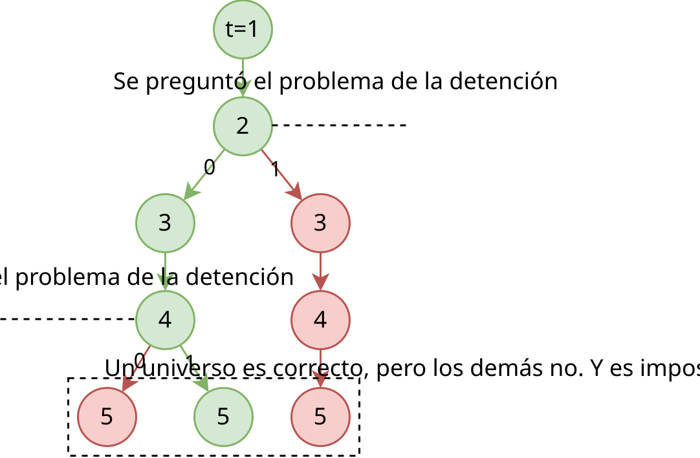
Por lo que incluso si en nuestras leyes de la física o en las leyes del funcionamiento de la consciencia encontramos un fenómeno capaz de resolver el problema de la detención, aún puede existir como un programa de computadora.
En este caso, resulta que, de manera similar al argumento de los números incorrectos, para no entrar en un universo con cálculos normales, es deseable que la consciencia del observador en ese universo también utilice la no calculabilidad, que es vital para el funcionamiento de esa consciencia. Es decir, la no calculabilidad de las leyes de la física debe ser susceptible a la filtración antrópica. Hasta donde sabemos actualmente, ni los fenómenos físicos de nuestro universo ni la consciencia humana requieren resolver el problema de la detención para su existencia.
Si existen otras variantes de la no calculabilidad, por favor, hazmelo saber.
#2No importa si la consciencia humana se puede simular
Supongamos que no estás de acuerdo con todos los puntos anteriores, o resultó que nuestro universo no los satisface a todos, y por lo tanto no se puede calcular en una computadora. En este caso, analicemos qué tan posible es simular la consciencia humana.
En primer lugar, la consciencia, a diferencia de las leyes de la física, es mucho más confiable de calcular con un enfoque ingenuo. Es decir, el principio de construcción y todos los razonamientos anteriores son muy aplicables a ella.
De acuerdo con las ideas científicas modernas, la consciencia humana se calcula en el cerebro y no utiliza efectos cuánticos, es decir, el cerebro es similar a una computadora clásica. Al mismo tiempo, las neuronas del cerebro son lo suficientemente grandes como para investigarlas y encontrar las leyes completas de su funcionamiento, y las señales entre las neuronas no están codificadas con números reales ideales, sino con un número discreto de iones que transmiten carga eléctrica. Por lo tanto, se cree que la posibilidad de simular el cerebro humano es solo una cuestión de tiempo y potencia informática.
Por lo tanto, incluso si nuestro universo no se puede simular con absoluta precisión, se puede simular el cerebro con la mayor precisión posible en una computadora. Si un universo continuo no tiene un límite de precisión y se puede aumentar infinitamente, entonces el cerebro tiene ese límite. Esta precisión está limitada por el tamaño de los electrones. Es decir, se puede simular el cerebro humano de modo que emita exactamente el mismo número de iones en cada neurona que el cerebro físico en un universo no calculable. Y esto significa que si iteramos sobre todos los posibles datos de entrada para ese cerebro hasta su muerte, seguramente encontraremos cualquier universo no calculable, incluido el nuestro. Es decir, podemos calcular un cerebro que observa un universo no calculable sin calcularlo.
Y como toda la esencia de unasanu solo estaba en los observadores con consciencia que observan su universo, entonces simplemente nos deshicimos de un detalle extra.
¿Es posible simular la consciencia humana?
#2La biología, la sociología, la psicología y cosas similares no se describen con las matemáticas
Existe un argumento como este: "La biología, la sociología, la psicología y cosas similares no se describen con las matemáticas, por lo que nuestro universo tampoco se describe con las matemáticas y no se puede simular".
Este es un argumento bastante extraño que surge solo por falta de comprensión de lo que significa "describirse con las matemáticas" y para qué son capaces las matemáticas y la programación.
Entiendo que en este argumento, "describirse con las matemáticas" significa que estas cosas se pueden describir con algunas reglas simples de bajo nivel, a partir de las cuales se puede derivar todo lo demás, o que se describen con reglas simples de alto nivel que se pueden utilizar para predecir el comportamiento de todo el sistema en su conjunto.
Es decir, en este argumento, la imposibilidad de simulación se equipara a la falta de una forma hermosa y simple de describir el comportamiento de todo el sistema. Y en tal formulación, hay un error lógico, porque de lo segundo no se deduce lo primero.
Por ejemplo, la biología. Su desarrollo no está descrito por algo simple porque es compleja y está formada por billones de componentes, donde alguna aleatoriedad en cualquier nivel puede conducir a todo el sistema a un punto de equilibrio diferente, o puede que no haya puntos de equilibrio en la biología. Pero esto no significa que este sistema no pueda estar formado por componentes elementales. Por ejemplo, la gente está trabajando activamente en la simulación de la evolución y la creación de vida artificial. Crean simulaciones de las que luego ellos mismos no pueden "describir matemáticamente", por lo que crean sistemas muy complejos donde todo interactúa con todo.
Y nadie ha cancelado la posibilidad de la emergencia, cuando varias cosas juntas tienen más propiedades que la suma de las propiedades de esas cosas por separado.
Si algo no se describe matemáticamente a alto nivel, no significa que no esté formado por matemáticas a bajo nivel.
Por lo tanto, si tienes una cantidad increíble de cálculos y simplemente simula los átomos, y luego surge una sociedad sobre la base de ellos, que cree que supuestamente no está descrita por las matemáticas, este es el problema de esa sociedad. En tu computadora, todo es matemáticas.
Así que este ni siquiera es un argumento, sino más bien una constatación del hecho de que la humanidad no entiende muy bien los procesos emergentes de alto nivel, y esto no tiene nada que ver con la imposibilidad de simular un universo.
#3Reducción computacional
Creo que la gente entiende mal las computadoras y los cálculos. Algunos creen que todo ese rico mundo observable simplemente es imposible de calcular en una computadora, porque las computadoras son "ceros y unos", "algoritmos simples". Por lo tanto, creen que en un mundo determinista, la libertad de voluntad es imposible; que la IA nunca tendrá emociones humanas o capacidades creativas; que la biología y la psicología "no se describen con las matemáticas"; y que si este mundo se simuló, entonces nada tiene sentido y se puede robar, matar, etc.
Tal vez el problema aquí también es que la gente está segura de la imposibilidad de reducir las experiencias subjetivas a los cálculos: emociones, sensaciones, placer, sufrimiento. Trataré este tema en el capítulo sobre la panqualia.
Para mostrar dónde creo que este punto de vista está equivocado, quiero introducir un término similar a la independencia del sustrato para mostrar otra propiedad poderosa de los cálculos.
Reducción computacional es la propiedad de los cálculos según la cual cualquier sistema que se describe con la lógica es susceptible a la simulación.
Sí, esta es una afirmación muy fuerte. No es un hecho que sea correcta, pero esta es mi posición filosófica.
La reducción computacional se manifiesta en que podemos describir todos los tipos de cálculos, incluidos los universos infinitos, continuos, no deterministas y no calculables. Cualquier nueva categoría de universos que parezca no calculable es simplemente una tarea para los matemáticos del futuro.
Y si la consciencia es cognoscible y está sujeta al menos a alguna lógica, entonces tarde o temprano habrá una oportunidad de simularla, al menos teóricamente.
Probablemente, esto sea difícil de entender sin ser programador. Porque yo, como programador, con el paso de los años he implementado programas cada vez más complejos, y tengo la impresión de que todo lo que entiendo se puede programar. Si no se puede programar, entonces no lo entiendo lo suficientemente bien. La creación de una simulación es equivalente a la comprensión máxima de las leyes de bajo nivel de este proceso. La escritura de programas, como los experimentos, ayuda a encontrar la verdad y los agujeros en los pensamientos. Para mí, la reducción computacional es obvia.
#2Resumen
Se ha demostrado que es posible eliminar algunas restricciones para algunos tipos de simulaciones. Sabemos que también están sujetos a unasanu:
- Algunas clases de universos infinitos,
- Algunas clases de universos continuos,
- Universos con aleatoriedad absoluta,
- Universos capaces de resolver el problema de la detención.
Otros universos que no se pueden simular requieren más investigación. Probablemente, todo se pueda describir con cálculos de una forma u otra.
Y después de todas estas afirmaciones, se puede decir con una alta probabilidad que nuestro universo es calculable y, por lo tanto, está sujeto a unasanu.
Ahora también tenemos una mejor comprensión de las preguntas abiertas:
- ¿Para qué clases de universos es posible aplicar el método de transición límite? ¿Y a qué clase pertenece nuestro universo?
- ¿Qué clases de universos se pueden calcular con el método ingenuo? ¿Y nuestro universo pertenece a estas clases?
Y también quiero enfatizar que incluso si nuestro universo y nuestra consciencia no están sujetos a unasanu por cualquier razón, todas estas ideas están sujetas a los universos que existen como programas. Ahora sabemos que estos universos existen y es sorprendente. Y mostraré aún más consecuencias interesantes de unasanu para estos universos.
A partir de ahora, se considerará que nuestro universo sí es calculable. Si esto no te convence, simplemente imagina que no estoy hablando de nuestro universo, sino de uno calculable arbitrario, y todas las conclusiones son válidas precisamente para ese otro universo.
#La consciencia como un número
Anteriormente, expliqué todo a través de la existencia de universos que contienen observadores. Todos estos razonamientos no tienen sentido sin observadores, incluso la propia definición de existencia la introduzco con énfasis en que los observadores dentro de ella observan su universo. Si los observadores son tan importantes, entonces es mucho más fundamental considerarlos como universos separados.
Si el universo es calculable, entonces cualquier subsistema suyo también es calculable y se puede describir mediante algún programa, y como los observadores son parte del universo, entonces también se pueden describir mediante un programa que solo los calcula a ellos, y no las leyes de la física. Y como sabemos, cualquier programa con cualquier dato de entrada ya está calculado. Esto significa que cualquier observador con todos los posibles datos de entrada ya existe como un número. Esta idea incluso se puede llamar conasanu.
Conasanu (consciousness as a number) es un concepto filosófico según el cual cualquier consciencia con cualquier dato de entrada ya está calculada y existe como un número y no necesita ningún universo para existir.
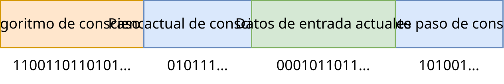
En este sentido, parece que el solipsismo debería triunfar, pero no del todo. El solipsismo afirma que la realidad externa no existe. Pero según unasanu, existe todo lo que se puede construir. Y si tus observaciones son mucho más fáciles de describir con algún programa para simular un universo externo, entonces así es. Al mismo tiempo, el solipsismo sigue siendo cierto en el sentido de que no podemos estar seguros de nada más que de nuestras propias sensaciones, y es un milagro que nuestras sensaciones describan un universo físico externo.
Al mismo tiempo, es importante recordar que cada consciencia que existe como una estructura física en algún universo también existe como un programa separado. Y, probablemente, lo contrario también es cierto: parece que podemos construir un universo para cualquier conjunto posible de datos de entrada de la consciencia con las más diversas muletas. La única pregunta es qué tan hermoso y simple será ese universo.
Tegmark [18] basa toda su teoría en que de la existencia de la realidad física externa se deduce que existe como una construcción matemática, pero esto se desmorona un poco por el hecho de que entre las construcciones matemáticas también existen consciencias separadas, no necesariamente atadas a ningún universo.
Resulta que hay una imagen interesante donde en nuestro mundo cada consciencia es un universo separado, y al mismo tiempo estas consciencias interactúan entre sí a través del universo físico.
En general, dado que conasanu es más fundamental que unasanu, sería lógico construir un artículo alrededor del primero, pero yo lo estoy construyendo alrededor del segundo, porque es más simple para mí y para ti. Tal vez esto sea un error.
#2Panpsiquismo, ¿tiene el piedra consciencia?
Puede parecer que de conasanu se deduce que en la piedra hay codificada alguna consciencia, y en cualquier otro objeto, y que todos ellos son conscientes y sienten algo. Este punto de vista se llama panpsiquismo.
En la piedra realmente hay muchos números y entre ellos se pueden encontrar muchas consciencias calculadas, pero el problema es que esto no significa nada. Con el mismo éxito, en tu cerebro físico hay muchas consciencias diferentes, incluso exactamente las mismas que en cualquier otra piedra o cualquier otro cerebro de tamaño similar. Pero lo más importante es que todas estas consciencias ya existen primero como números, y el hecho de que estén en la piedra es solo una adición.
Entonces, ¿en qué se diferencia la consciencia humana de la consciencia de la piedra? El asunto es que la consciencia humana puede interactuar con el universo externo de tal manera que otras consciencias similares (humanos y animales) puedan observarlo y hacer lo mismo. Las consciencias dentro de la piedra existen para sí mismas y el universo donde se encuentran no las afecta de ninguna manera. Además, su tiempo existe dentro de sus números y no está conectado con nuestro tiempo. Aunque existe una forma de que el tiempo de estas consciencias fluya junto con el tiempo de nuestro universo, como se propone en el argumento de Hilary Putnam [29].
En [30] se intenta refutar la computabilidad de la consciencia a través del argumento "entonces el panpsiquismo será verdadero, pero esto es absurdo". El argumento se llama Dancing with Pixies. Bueno, sí, el panpsiquismo es verdadero, pero al mismo tiempo es inútil, todo sigue igual y las piedras siguen siendo indiferentes, incluso si contienen muchas consciencias.
#2Prefiero la panqualia
Sobre este tema, me gustaría expresar mi visión del panpsiquismo. Mi punto de vista se debe llamar panqualia.
Cualia (también conocidas como experiencias subjetivas) es el hecho de tus sensaciones, la forma en que sientes los olores, los colores, las emociones, el amor, etc.
En la filosofía, la cualia se distingue como una categoría separada, en torno a la cual hay muchas disputas. Por ejemplo, algunos creen que la inteligencia artificial nunca podrá tener cualia, especialmente el amor, porque el gladiolo.
Considero al cerebro como un programa bastante complejo, y no como algo especial, por lo que creo que no hay nada fundamental en las experiencias subjetivas sobre lo que deba discutirse desde un punto de vista filosófico. En general, creo que no existen las experiencias subjetivas: la forma en que percibes el color rojo es el resultado del cálculo de tu cerebro, el resultado de la codificación del color rojo en las neuronas, es un conjunto de asociaciones, un conjunto de interconexiones entre otros colores, un conjunto de recuerdos que se activan al observar el color rojo; y el dolor en los ojos al observar texto rojo sobre fondo azul también está asegurado por el dispositivo físico de tu ojo. Es decir, todo esto son cálculos y algoritmos secos. Y esas sensaciones tan ricas se proporcionan debido a la fuerte conectividad de las diferentes partes de tu cerebro.
O, si quieres, puedes expresar mi punto de vista de una manera más optimista: ¡si alguna propiedad no existe, entonces todo la posee! :)
Panqualia es un punto de vista sobre la cualia según el cual cualquier algoritmo tiene cualia por definición.
Por ejemplo, tomemos una red neuronal aleatoria y comencemos a alimentarla con datos aleatorios. Creo que esta red neuronal tiene experiencias subjetivas y siente algo. El único problema es que esta red neuronal:
- No tiene inteligencia para entender que siente algo.
- No tiene memoria para recordar lo que acaba de sentir.
- No tiene lenguaje para contarle a otras redes neuronales similares lo que sintió.
- Incluso si tuviera todo esto, sus sentimientos no están estructurados y los datos de entrada son aleatorios, por lo que la inteligencia y la memoria probablemente no la ayuden.
Aquí se sugieren varios criterios medibles de mi comprensión de la cualia, y la solución de cada uno de ellos hace que el sistema sea más sensible y más cercano a la experiencia humana del mundo.
Por lo tanto, toda la peculiaridad de la cualia humana se reduce a tener razón, memoria, lenguaje y un tipo especial de datos de entrada. Y toda la multifacética y especial naturaleza de nuestros sentimientos humanos se logra debido a que estamos formados por redes neuronales, donde cada sentimiento activa no solo las neuronas objetivo, sino también todas las conectadas. Es precisamente gracias a esta conexión que podemos sentir el calor del color rojo y percibirlo no como una cámara digital.
Así que de esta visión se puede decir que la IA basada en algoritmos secos para mover letras (como en el experimento mental de "la habitación china" de Searle [31]) sentirá el mundo de manera completamente diferente a la de un humano. Pero la IA basada en redes neuronales bien puede sentir como un humano, o incluso mejor y más hermoso, como un sinestésico de alto nivel.
Offtopic sobre la habitación china
Si no conoces este argumento, entonces lee sobre él en Wikipedia en el enlace anterior. Aquí haré una pequeña crítica.
Este argumento es incorrecto porque el humano en este caso es un sustrato computacional, y no el propio entorno/agente calculable, y con el mismo éxito podría calcular la interacción de los átomos que componen el cerebro de una persona viviente real, y con el mismo éxito no entendería nada. Pero un humano sobre esos átomos calculables sería más vivo y consciente que una habitación china.
Tengo una sugerencia para modificar este experimento que satisfará a Searle y su deseo de comprender el sistema calculable. Pero esto requiere tecnologías de ciencia ficción demasiado avanzadas. Primero, necesitas tener una red neuronal de una habitación china y luego conectarla al cerebro de Searle a través de Neuralink o una tecnología más avanzada. La comunicación debe realizarse a través de Searle. Luego, la red neuronal debe ser entrenada en el idioma chino y el interfaz del cerebro de Searle. Entonces, cuando lancemos esta construcción, las neuronas de Searle intercambiarán información con las neuronas de la habitación china, y podrá sentir y comprender algunas partes del idioma chino (pero no de inmediato, por supuesto). Cuanto más haya interacciones, más conexiones neuronales se formen (por ejemplo, entre las neuronas azules del cerebro de Searle y la red neuronal de la habitación china al hablar sobre el tema del color azul), y más entenderá el idioma chino y se fusionará con la consciencia de la habitación china.
Por cierto, ya existen ejemplos de seres virtuales que tienen cualia y, si quieres, consciencia. Al menos según los criterios descritos anteriormente. A continuación, simplemente replantearé la descripción de un trabajo que usó ChatGPT. Los agentes en él tienen todo lo que necesitan:
- Inteligencia (pequeña),
- Memoria (pequeña),
- Lenguaje,
- Sentimientos estructurados,
- Otros agentes similares para la comunicación y la interacción (¡¡¡),
- A diferencia del ChatGPT original, no existen fuera del tiempo.
Pero les faltan algunas cualidades importantes para los humanos:
- Sensaciones, además del texto, es decir, audiovideo táctiles, etc.;
- La capacidad de aprender, porque este trabajo utiliza el prompt engineering a través de ChatGPT, y no podemos ajustar finamente esta red neuronal para cada agente para que el agente tenga su propio carácter más pronunciado o se desarrolle con el tiempo;
- Tiempo de simulación suficiente y memoria suficiente para crear una cultura propia dentro de la cual puedan comunicarse, vivir, discutir sus sentimientos y crear su propia filosofía.
Sugiero reconocer oficialmente este trabajo como el primero que crea una consciencia artificial real (aunque pequeña).

png
Un artículo increíblemente genial, no parecido a nada que haya visto antes: Generative Agents: Interactive Simulacra of Human Behavior
https://arxiv.org/pdf/2304.03442.pdf
En resumen, un juego como los Sims está poblado por 25 personajes, cada uno con su propia descripción de personalidad, sus propios recuerdos y sus propios objetivos. Todas las acciones de los personajes y las interacciones entre ellos se realizaron a través de la generación de LLM. Como resultado, los personajes rápidamente comenzaron a imitar un comportamiento humano bastante complejo: por ejemplo, organizaron una fiesta juntos para el Día de San Valentín, repartieron invitaciones y programaron citas. Además, según las estimaciones de los anotadores, sus acciones fueron más humanas que el comportamiento de las personas a las que se les pidió que jugaran con estos personajes.
Los autores tienen una idea muy genial con el uso del contexto del modelo: todas las acciones y las observaciones del mundo exterior se guardan, luego se recuperan algunos recuerdos relevantes de esta memoria. Los utilizan para generar la siguiente acción/réplica en una conversación, y también le piden al modelo que reflexione sobre ellos para formular planes más a largo plazo. Entonces, el personaje puede estar en observation, planning, and reflection.
Parece que esto es una bomba para jugar con diversos agentes en chats y, quizás, así es como se verán los NPC del futuro.
UPD: Olvidé agregar una demo genial también: https://reverie.herokuapp.com/arXiv_Demo/
y un hilo bastante detallado hilo sobre el artículo.
#¿Vivimos en una simulación?
Esta es una de las preguntas más apremiantes sobre la que todo el mundo habla constantemente y se pronuncia, y no tiene absolutamente ningún sentido. Pero como a todos les interesa, hablemos de ello.
En primer lugar, debemos entender que esta pregunta contiene dos preguntas completamente diferentes:
- ¿Es calculable nuestro universo, es decir, es posible calcularlo en una computadora al menos teóricamente?
- ¿Realmente alguien está calculando nuestro universo para algún fin suyo?
Ya hablamos de la primera pregunta, analicemos la segunda.
Supongamos que es posible simular nuestro universo. Entonces, podemos escribir un programa de un universo similar al nuestro, pero que tenga una toma de corriente megacomputacional, detrás de la cual se calcula nuestro mundo en tiempo real, y la toma de corriente simplemente transmite una interfaz para controlar y observar ese mundo. Alguien puede conectarse a esta toma de corriente y controlar nuestro mundo, o observar cualquier detalle. De acuerdo con el principio de construcción, el mundo con una toma de corriente súper computacional existe, y no hay nada inusual en él, simplemente hay el doble de cálculos que para un universo normal. Esto significa que somos una simulación de alguien. Además, se pueden crear infinitas simulaciones de este tipo que nos simulen. Al mismo tiempo, no hay que olvidar que nuestro universo ya existe como un número independientemente, es decir, es una realidad independiente.
Entonces: existimos simultáneamente como una simulación en un número infinito de universos y como una realidad independiente. Y esto funciona para cada universo posible.
Como con las consciencias en las piedras, esto no tiene ningún sentido hasta que los simuladores externos interactúen con nuestro mundo y podamos observarlo e investigarlo.
Existe un argumento de Nick Bostrom según el cual cualquier civilización altamente desarrollada tarde o temprano comienza a hacer simulaciones por la razón del gladiolo, por lo que nosotros, con una alta probabilidad, somos una simulación dentro de una simulación dentro de una simulación, etc. Además, este argumento es probabilístico, es decir, no es un hecho que alguien quiera simular nuestro universo, y el principio de construcción describe una respuesta garantizada a esta pregunta. Por lo tanto, el argumento de Bostrom para esta pregunta ya no se puede considerar.
Tampoco tiene sentido "vivir una vida interesante para que no apaguen nuestra simulación", porque, como recordamos, incluso si la apagan en todos los universos, seguiremos existiendo como un número.
#Dios y unasanu
Analicemos qué importancia tiene Dios desde el punto de vista de unasanu. Solo hay dos métodos para introducir el concepto de Dios.
Dios es una criatura inteligente que puso en marcha una simulación y luego puede observarla o influir en ella. En el caso máximo, Dios es un súper programador inteligente con un número ilimitado de cálculos y memoria.
De acuerdo con el principio de construcción, en cada universo hay un número infinito de dioses de los más diversos. Se puede utilizar el universo con una toma de corriente computacional del punto anterior. Al mismo tiempo, incluso si Dios proyectó su rostro en el cielo, siempre se puede construir un universo donde tenga un aspecto completamente diferente, pero decidió reemplazar su rostro con la ayuda de la tecnología. Esto significa que cualquier universo tiene un número infinito de dioses.
Incluso si algún Dios está a cargo de algún universo y copia los cerebros de todos los seres después de la muerte y los distribuye en otras simulaciones llamadas "paraíso" e "infierno", no es omnipotente. El asunto es que el universo sin su intervención existiría, y no puede hacer nada al respecto. Ningún Dios puede prohibir la existencia de algún universo. Lo mismo ocurre con los universos con sufrimientos a los que Dios no llega por alguna razón. Esto significa que si algún ser sintió que después de la muerte no terminó en el "paraíso" ni en el "infierno" del que hablaba su Dios, entonces esto puede no ser por voluntad de su Dios.
¿Puede este Dios saber todo lo que va a pasar en el universo que está simulando? Sí, porque él, como cualquier programador, puede simularlo hasta el momento deseado y luego restaurar una copia de seguridad del pasado. Los problemas comienzan cuando Dios quiere saber cuál será el futuro de su universo si interviene en este universo. Es decir, necesita simularse a sí mismo, incluyendo a sí mismo, a una velocidad mayor que el flujo de su tiempo, y que dentro de esa simulación esté esa misma simulación, y así hasta el infinito. Y esto es imposible de simular en general. Por lo tanto, Dios no puede saber con absoluta certeza qué pasará con su universo junto con él en el futuro. Pero puede reemplazar su imagen con un modelo aproximado en sus simulaciones (que no observa simulaciones con un modelo aproximado) o con una marioneta con guion, y conocer su propio futuro en esa simulación con la certeza necesaria. O puede conocer su futuro con absoluta certeza, sin posibilidad de cambiarlo, pero entonces necesita someterse a restricciones, calculando ese universo "todo a la vez", como se propuso hacer con los universos con viajes en el tiempo.
Ningún Dios es la causa primordial de algún universo, cualquier universo existiría sin él. Por lo tanto, se puede considerar la segunda variante de la introducción de Dios.
Meta-Dios es un Dios que creó todos los universos, con todos los otros dioses ordinarios.
El Meta-Dios no tiene sentido, porque no tuvo elección al crear y no juega ningún papel, tiene alguna opinión, está vivo o muerto. Además, esa explicación a través de Dios es un detalle extra que deja abierta la pregunta "¿Y quién creó a este Dios?". Una de las posibles respuestas es "Él es la causa de sí mismo o siempre existió". Si es así, ¿por qué las leyes de la lógica (de las que se deduce unasanu) no pueden ser la causa de sí mismas y existir siempre? Esta es, por supuesto, una pregunta retórica.
Entonces, los dioses externos solo tienen sentido cuando interactúan con nuestro universo y podemos observarlo e investigarlo. Y los dioses-observadores no involucrados son tan reales e inútiles como los seres inteligentes grabados en la piedra.
#El problema de los universos con errores
Esta es una sección con una crítica seria a unasanu.
Anteriormente, se examinó la cuestión de por qué solo son correctos los números que codifican cálculos correctos. Se puede continuar con este argumento y preguntar: ¿y por qué solo son correctos los números que codifican universos correctos? Y no necesariamente. Ahora explicaré.
Si nuestro universo se puede calcular de manera ingenua, entonces podemos construir la siguiente simulación "con errores":
- Tomamos el momento actual en el tiempo y lo consideramos como el inicial.
- Modificamos la materia en este momento de alguna manera arbitraria, por ejemplo:
- Eliminamos a una persona aleatoria,
- reemplazamos el aire con un conjunto aleatorio de otros átomos,
- añadir piedras a la órbita terrestre,
- eliminar Marte,
- convertir una estrella distante en un agujero negro.
- Y desde ese momento modificado, simulamos hacia el futuro.
- Para los observadores en este universo, todo parecerá como si hubieran vivido una vida normal y luego ocurriera un evento aleatorio que no se puede explicar por las leyes de la física ni por la relación causal con el pasado. El pasado puede que no exista, no es necesario para la existencia en general.
- Tal universo existe de acuerdo con el principio de construcción.
Ahora, lo interesante es que la simulación honesta que simula nuestro universo desde el Big Bang es solo una; y hay infinitas simulaciones como las descritas anteriormente para cada momento en el tiempo.
Si hay infinitas simulaciones con errores de este tipo, y la honesta es solo una, ¡¿por qué observamos una simulación honesta?! ¿Por qué no vemos que cada femtosegundo ocurre un evento completamente aleatorio con la eliminación y aparición de la materia?
Además, un universo con errores de este tipo no impide que los observadores observen su universo, porque se calcula honestamente, solo que toma condiciones iniciales extrañas de la materia, por lo que la filtración antrópica no es aplicable aquí.
¿Por qué no observamos errores en el universo?
Pero aquí ya entramos en el ámbito de las reflexiones que se pueden caracterizar como "la probabilidad de estar en un universo de un tipo determinado", y esto lo discutiremos más adelante, mientras tanto, hay varias soluciones potenciales a este problema:
- Estos eventos realmente ocurren, pero en diferentes partes del universo, y el universo es tan grande que durante todo el período de nuestras observaciones razonables no hemos notado nada inusual. O lo hemos notado y lo llamamos fenómenos paranormales, pero nadie le cree a esos observadores.
- Estos eventos ocurren todo el tiempo, pero ocurren a nivel subatómico, por lo que observamos una aleatoriedad absoluta en la mecánica cuántica. Si esto es cierto, entonces la mecánica cuántica es una propiedad fundamental de cualquier simulación estable. Es decir, cualquier simulación finalmente converge a la mecánica cuántica, porque este es el desarrollo de eventos más probable. Y nuestras leyes de la física simplemente funcionan de tal manera que construyen algo lógico, funcional y estable sobre la base de esta aleatoriedad.
Para estos dos argumentos, hay un contraargumento muy sólido: desde el punto de vista de la combinatoria, la expectativa matemática del número de cambios aleatorios en el estado del universo es igual a la mitad de todo el universo. Desde este punto de vista, es mucho más probable observar que la mitad de todo el universo se haya reemplazado por un conjunto aleatorio de átomos, que observar lo mismo para una pequeña parte del espacio.
Otra solución a este problema: ¿y si las leyes de la física de nuestro universo están dispuestas de tal manera que es imposible ejecutar el algoritmo descrito anteriormente, ¿qué pasa si nuestras leyes de la física requieren tener un pasado consistente para funcionar? Y por eso no observamos universos con errores, porque es imposible construirlos, y si es posible, entonces es imposible simularlos, por lo que los observadores de esos universos no los observarán. Introduzcamos un término especial para esto.
Universo anti-errores es un universo con tales leyes de la física para las que es imposible construir estados con errores descritos anteriormente.
Esta es una solución muy interesante a este problema, pero dudo que sea factible desde un punto de vista teórico. Parece que cualquier sistema de este tipo se puede simular con muletas de una manera ingenua y luego romper.
Aunque este problema parece aún más complejo si lo consideramos desde el punto de vista de la consciencia como un número (conasanu). Desde este punto de vista, existen muchas más consciencias que observan experiencias subjetivas que no se pueden explicar con la lógica. Por ejemplo, golpean una piedra y la piedra no responde ni devuelve la sensación de contacto o dolor. O puedes crear percepciones sensoriales en las que, a partir de cierto momento, toda la información se muestra un segundo después que a la consciencia original. ¿Entonces, la consciencia también debe describirse con leyes anti-errores? ...
¿Es posible desarrollar una simulación que describa un universo anti-errores, y nuestras leyes de la física y las leyes de nuestra consciencia pertenecen a esta clase de universos?
Si la aplicación de las probabilidades a los universos no es absurda, entonces de unasanu se deduce que las leyes de nuestra física son anti-errores, de lo contrario observaríamos un universo con errores. O estamos calculando mal las probabilidades.
#2Cambio de las leyes de la física
Siempre se puede construir un universo que tenga nuestro momento actual en el tiempo como condición inicial, y las leyes de la física sean un poco diferentes: por ejemplo, la velocidad de la luz es un poco más rápida o más lenta (en la medida en que sea posible programarla para nuestras leyes de la física y el dispositivo de la materia en general). Si esto viola el funcionamiento de nuestra consciencia, entonces ese cambio en las leyes de la física es susceptible a la filtración antrópica, por lo que no debemos observarlo. Pero, de manera similar a los universos con errores, si la aplicación de la probabilidad a los universos no es absurda, entonces debemos observar un cambio aleatorio constante en las leyes de la física que no viole el funcionamiento de nuestra consciencia.
¿Quizás esta sea la mecánica cuántica? ¿Tal vez cualquier simulación con seres vivos finalmente converge a algo similar?
Si la aplicación de las probabilidades a los universos no es absurda, y si tales modificaciones son posibles, entonces debemos observar ese cambio constante en las leyes de la física que no interfiera con el funcionamiento de la consciencia.
#2Muerte de todos los humanos al trasladarse a una computadora
¿Cómo puede funcionar esto? Imaginemos que la gente inventó computadoras que funcionan exclusivamente con neutrones. Entonces, esas computadoras no necesitan leyes de la física relacionadas con las cargas. Mientras que el funcionamiento del cerebro humano requiere cargas eléctricas. Debido a la filtración antrópica, una persona casi siempre observará un universo donde la computadora que construyó funciona (porque la depuró mientras estaba viva). Cuando alguien se traslada a una computadora, entonces su existencia no requiere cargas eléctricas, y es muy probable que pueda observar un cambio en las leyes de la física hacia otras más aleatorias, que no requieren cargas eléctricas (debido a la filtración antrópica). Por lo tanto, después de trasladarse a una computadora, la consciencia dentro de la computadora puede observar que todos los animales, plantas y humanos han muerto instantáneamente.
En la imagen de abajo se muestra el universo inicial donde la consciencia se carga en una computadora, y cuatro posibles desarrollos de eventos (humanos o computadoras mueren en diferentes combinaciones), bajo la condición de que el universo inicial se simule con todas las leyes de la física. Cada cuadrado muestra una posible variante, es decir, un cierto conjunto de universos, y un comentario sobre ellos.
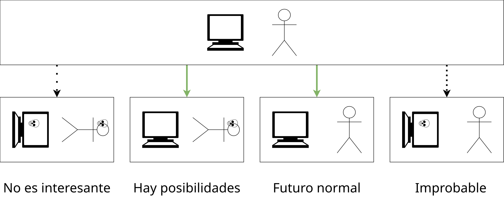
#Probabilidades de los universos, o el problema de la medida
Volviendo a la pregunta "¿probabilidad de estar en un universo determinado?". En la ciencia, esto se llama "el problema de la medida" [33].
El problema es que no está claro cómo calcular exactamente las probabilidades de universos específicos y cómo se pueden comprobar o refutar los diferentes enfoques para resolver este problema. Este problema se conoce desde hace mucho tiempo con respecto a la interpretación de muchos mundos de la mecánica cuántica: no está claro cómo calcular la probabilidad de algunas clases de universos cuando hay infinitas de ellos. Debido a este problema, soy muy escéptico sobre la idea de "un universo es más probable que otro".
Como ejemplo, se presenta la pregunta más simple: ¿qué porcentaje de números impares hay entre los pares?
- Si cuentas por los números en orden 1, 2, 3, 4, 5, ..., entonces obtienes la mitad.
- Pero si cuentas en orden 1, 2, 4, 3, 6, 8, 5, ..., entonces obtienes un tercio. Aquí, los números simplemente están ordenados de manera diferente y hay dos números pares entre dos números impares. El número infinito de ambas clases se conserva.
Todos están de acuerdo en que el orden natural con la mitad de los números impares es correcto, pero no está claro cómo elegir este orden natural para codificar un universo y si es posible definirlo de forma unívoca en general.
Hay otra objeción a las probabilidades con respecto a los universos: "cualquier experiencia debe ser probada". Sin importar cuán improbable sea tu universo, alguien debe vivir una vida en ese universo y experimentar que vive en él a pesar de todas las ideas sobre la probabilidad. Esto se puede ilustrar con una buena analogía: la probabilidad de que naciera chino es muy alta, pero no soy chino.
Y incluso si resolvemos el problema de la medida y podemos obtener las probabilidades de algún universo, no está claro si es posible falsificarlo o verificarlo, incluso con un número ilimitado de cálculos, en el que podamos recorrer todos los universos y calcular las probabilidades necesarias. Por lo tanto, la idea de "la probabilidad de estar en un universo determinado" puede ser solo una interpretación que no afecta a nada.
Y este problema se agrava aún más cuando necesitas considerar simultáneamente la infinitud de los universos continuos y la infinitud de los universos discretos.
#2La paradoja de la bella durmiente
Esta es una tarea de la teoría de la probabilidad para la que existen dos respuestas contradictorias, por lo que surge una paradoja.
Pero quiero hablar sobre una variante alternativa de esta paradoja, sobre un marinero. Hay un marinero que tiene dos amantes en diferentes puertos, que no se conocen entre sí. Quiere tener hijos, pero no puede decidir si tener hijos solo con una o con las dos. Por lo tanto, lanza una moneda y, si sale cara, tiene un hijo solo con una mujer, y si sale cruz, tiene un hijo con las dos. Eres su hijo y sabes de este evento. ¿Cuál es la probabilidad de que seas el único hijo, es decir, que la moneda haya salido cara?
Si lo consideramos desde el punto de vista del marinero, para él la probabilidad de tener un solo hijo es del 50%. Sin embargo, desde el punto de vista de su hijo, existen tres hijos diferentes, y para dos de ellos la moneda salió cruz, resulta que para los hijos es más lógico considerar que la probabilidad de que salga cara es del 33%. O se puede decir que si los hijos toman esa probabilidad, tendrán razón en más casos. 🤪
Esto es muy similar a las diferencias entre conasanu (el punto de vista del niño) y unasanu (el punto de vista del marinero). Teniendo en cuenta tales paradojas, el problema de la medida se vuelve aún más irresoluble.
Por lo tanto, es demasiado pronto para hablar de predicciones probabilísticas y, quizás, el problema de los universos con errores no refuta a unasanu.
#2Metaprobabilidades (solo una idea)
Si piensas bien, no existen las probabilidades físicas. Solo existen eventos y pueden suceder o no suceder. Esta es una idea conveniente que nos permite comprender el mundo un poco mejor. ¿Y si tratamos las diferentes respuestas de la misma manera y creamos probabilidades sobre probabilidades? Crear metaprobabilidades que dan una distribución de probabilidades teniendo en cuenta todos los puntos de vista.
En el caso del marinero, habrá dos puntos: 33% y 55% con un peso de 0.5 cada uno.
¿Se puede construir una matemática interesante y útil a partir de esto? No lo sé, es solo una idea.
#2Solución probabilística al problema de la detención
Supongamos que la teoría de la medida se puede resolver y nuestra comprensión de los universos más probables es correcta. Entonces, podemos construir un universo que puede resolver el problema de la detención con una probabilidad que tiende al 100%. Entonces, el algoritmo:
- Cada vez que le preguntan a un universo si un programa determinado se detendrá, lanzamos dos universos, en uno de los cuales se da inmediatamente la respuesta "no se detendrá", y en el otro este programa comienza a calcularse en lugar de todo el universo.
- Si en la segunda variante, el programa nunca se detiene, entonces sus habitantes no sentirán nada, porque el cálculo de su cerebro nunca llegará, y los habitantes de la primera variante tendrán razón.
- Si en la segunda variante, el programa se detiene alguna vez, entonces se devuelve el número de pasos después del cual se detiene el programa y un número natural arbitrario. Y luego recorremos todos los posibles números naturales en este caso, creando una copia del universo para cada número nuevo y continuando simulándolo. Resulta que tenemos infinitos universos donde el programa se detuvo, y solo queda un universo con una respuesta incorrecta.
- Todos los universos se calculan en paralelo, y la adición de nuevos universos no afecta de ninguna manera al cálculo de los demás.
Por lo tanto, si vives en un universo como este, siempre obtienes la respuesta correcta para resolver el problema de la detención, con una probabilidad que tiende al 100%.
#La muerte
Unasanu da predicciones interesantes sobre la muerte, y, a diferencia de las predicciones probabilísticas inútiles, la predicción sobre la muerte es garantizada.
#2Por qué es imposible morir
Cuando se habla de la vida después de la muerte, generalmente se hace en el estilo de:
- Transmitirás tus genes, vivirán en tus hijos.
- Transmitirás tus ideas, descubrimientos y otras cosas, y vivirán en otras personas, y mientras alguien te recuerde, vivirás. Por lo tanto, debes ser una persona lo más genial (o mala) posible para que te recuerden dentro de miles de años.
- Renacerás como un animal en este mundo, olvidando casi toda tu naturaleza humana.
Todo esto es absolutamente inútil. Creo que yo soy exclusivamente lo que está en mi caja craneal, así como mis recuerdos, carácter, pensamiento, habilidades motoras, etc.
Y si se destruye algo de esto, entonces parte de mí morirá. Si se destruye todo, entonces yo moriré por completo. Y las ideas transmitidas a través de libros y artículos son una parte insignificante de todas mis ideas. Hasta ahora, la digitalización de la consciencia está ausente y no parece posible transmitirla o almacenarla en una forma satisfactoria.
Y esa imposibilidad de morir de la que hablaré es absoluta, sin medias tintas en forma de genes o vida en los recuerdos de la gente. Toda tu personalidad y experiencias subjetivas siguen viviendo de la misma manera que viven ahora. ¿Cómo funciona?
Aquí todo es simple. Puedes tomar tu cerebro después de la muerte, agregarle telómeros o repararlo si fue destruido por una muerte no natural, y luego colocarlo en un nuevo cuerpo en un universo aleatorio y ejecutar la simulación. De acuerdo con el principio de construcción, ese universo con tu cerebro después de la muerte ya existe. Esto significa que cuando mueras, sentirás que has terminado en un universo determinado y que en realidad no has muerto. Y cuando mueras en un nuevo universo, de nuevo, de acuerdo con el principio de construcción, habrá otro universo donde te encontrarás. Por lo tanto, es imposible morir.
Una vez más, nadie crea un universo después de la muerte, nadie copia tu cerebro de ese universo, el universo después de la muerte ya existe simplemente por el hecho de que es posible construirlo. Se puede decir de otra manera: si recorres todos los posibles universos, seguramente encontrarás un universo con tu cerebro después de la muerte, modificado para que pueda seguir viviendo.
Suena demasiado simple, ¿verdad? Profundicemos en los contraargumentos que puedas tener.
#2Si arreglan el cerebro, entonces ya no seré yo
Muchos pueden decir que el mismo proceso de reparación del cerebro hará que tu copia sea otra persona, y que ya no serás tú, y por lo tanto, después de la muerte, no sentirás lo que sentirá ese cerebro.
Pero esto no es muy lógico, porque los telómeros se encuentran en el ADN y no afectan de ninguna manera el proceso de pensamiento o los recuerdos del pasado. Tú eres precisamente las conexiones entre las neuronas, y no se ven afectadas en el proceso de reparación.
Si consideras la variante en la que te mataron de un disparo en la cabeza, entonces será más difícil de reparar. Pero es posible: simplemente iniciamos el movimiento de la bala en orden inverso y reconstruimos el cerebro por neuronas, conservando al mismo tiempo todas esas microsegundos de impulsos que recibió mientras la bala atravesaba tu cerebro, para que sea una continuación continua del cerebro fallecido.
Se puede expresar matemáticamente: para cualquier forma de muerte, siempre habrá un cerebro reparado que estará tan cerca del original como tu cerebro y tu cerebro un microsegundo después durante la vida normal.
Si no te convencen esas manipulaciones tan inofensivas, ¿por qué te consideras la misma persona cuando duermes? Según la comprensión moderna, tu cerebro durante el sueño cambia y se vuelve a formatear en órdenes de magnitud más que la simple adición de telómeros. Incluso se puede decir que una copia de tu cerebro con telómeros añadidos eres tú en un orden de magnitud más que mañana.
#2Ya no seré yo porque es otro universo
¿Por qué? ¿En qué se diferencia físicamente tu copia en otro universo de tu copia en este universo en el momento t + 1?
Si ambos universos se calculan según las mismas leyes de la física y tu cerebro se copia con precisión hasta las partículas subatómicas y otras partículas de las que están formados, entonces esta no es solo una copia, es, se puede decir, el original. Es poco probable que esa precisión se logre alguna vez con la tecnología de digitalización de la consciencia.
La única diferencia entre tu copia en un nuevo universo y el "original" será que no hay una conexión causal directa entre el momento pasado en el tiempo y el siguiente, escrita en las leyes de la física, como se hace en el universo original, cuando el tiempo pasa del momento t al momento t + 1. Sin embargo, el proceso de copia se puede añadir a las leyes de la física, y ahora no serán diferentes en nada. De todos modos, para nosotros solo existe el momento actual en el tiempo y los recuerdos del pasado, y este tipo de copia no los viola.
#2¡¿De dónde salió mi cerebro con un nuevo cuerpo allí?!
Esta es una pregunta inapropiada con respecto al principio de construcción: construimos ese universo y esa construcción es posible, por lo que existe. Realmente no importa de dónde salió todo. Esa es la esencia de la existencia de todos los posibles universos.
Pero si esta pregunta te preocupa tanto, aquí tienes algunas respuestas:
- Ese universo no tiene un estado pasado, por lo que el estado con tu cerebro es el primer momento en el tiempo de ese universo, el "jardín del Edén". Y como existen todos los posibles primeros momentos de todos los universos, no puede haber ninguna objeción lógica a esto.
- Los eventos aleatorios se han producido de tal manera que surgió de la materia orgánica de una manera milagrosa.
- Un googol de diferentes ondas electromagnéticas y gravitatorias llegaron del espacio exterior y se juntaron en un solo punto de una persona viviente de tal manera que su cerebro se tostó y se transformó en el tuyo.
De cualquier manera, en el marco de la física.
#2La muerte es imposible de sentir
La esencia es que la muerte es la desactivación del funcionamiento del cerebro. Y como sabemos, todas nuestras experiencias subjetivas y sentimientos solo nacen cuando el cerebro funciona.
Resulta que cuando mueras, no sentirás nada, no podrás decirte que has muerto. No será vacío, no será oscuridad, porque en ausencia de datos de entrada de los órganos sensoriales, es muy posible tener pensamientos y sentir tu propia existencia simplemente por el proceso de pensamiento. La muerte, por el contrario, es la ausencia de pensamiento. Resulta que la muerte es imposible de sentir.
Al mismo tiempo, tu copia sentirá y tendrá grabado en su cerebro como si hubiera "muerto" hace unos momentos, y ahora vive en un universo determinado. Ese también serás tú, porque solo existes cuando sientes algo.
#2Desde el punto de vista de la copia
Si todo esto no te convence, miremos desde el punto de vista de que originalmente eres una copia en otro universo. ¿Cómo es posible esto si ahora estás viviendo en el universo original? Muy simple: ahora eres un recuerdo para esa copia que está en un nuevo universo.
Para que tu cerebro actual se forme y sienta que vive, es necesario que haya vivido y sentido todos esos años que ahora están escritos en tu edad. Esa es la esencia del tiempo y las leyes de la física que lo definen. Subjetivamente, es imposible saltar años adicionales, tomando de un futuro tu cerebro un par de años mayor, ese cerebro te dirá que vivió esos años y que fue bastante tiempo.
Por lo tanto, si te miras desde el punto de vista de que ya eres una copia, entonces no hay nada inusual en que ahora estés viviendo una vida en el universo original. La copia debe sentir que vivió en el universo original, de lo contrario no será una copia de tu cerebro. De lo contrario, no tendrá grabados los recuerdos de cómo está leyendo este artículo ahora y no está de acuerdo con él.
Y si afirmas que no habrá vida después de la muerte, entonces estarás completamente equivocado, porque después de tu muerte, solo tus copias seguirán viviendo, y todas ellas, hasta la última, entenderán que estaban equivocadas, recordando este momento.
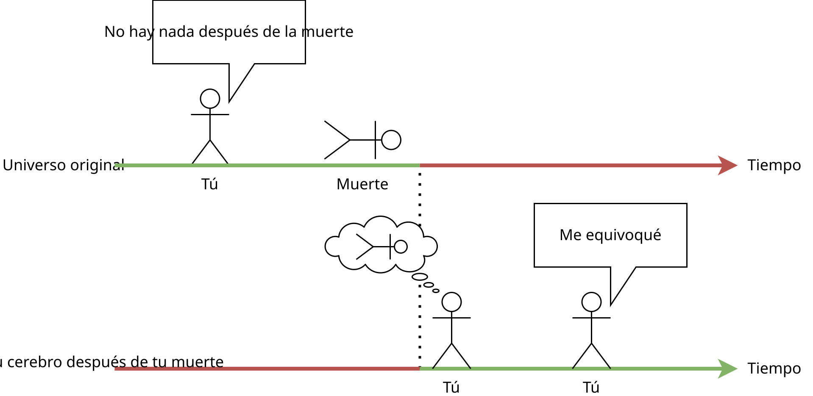
Pero no te concentres en la palabra "copia", porque las copias que son exactas hasta las partículas subatómicas son los originales.
#2¿A qué universo iré?
Me gustaría pensar que existe un conjunto limitado de universos interesantes a los que puedes llegar, como el "paraíso" o el "infierno" o la "vida después de la muerte", pero la realidad es mucho peor. Llegarás a todos los posibles universos al mismo tiempo. Es decir, en todos los posibles universos, habrá tu copia después de la muerte, y vivirá en el universo donde haya terminado.
En este momento, hay un número infinito de personalidades dentro de ti, que después de tu muerte seguirán caminos diferentes. Y lo único que tendrán en común es el pasado y el origen.
Así que no tiene sentido decir a dónde llegarás. Para cada copia en cada universo, terminarás donde terminaste, y no tiene sentido preguntarse "¿por qué estoy precisamente aquí?", porque toda la experiencia debe ser probada.
Incluso puedo darte muchos ejemplos de universos que es posible construir y donde puedes sentirte después de la muerte:
- El universo original, pero te despiertas en un manicomio y te dicen que no has muerto.
- En un planeta deshabitado aleatorio con un cielo púrpura e iluminación uniforme, como si estuviera lloviendo. Luego, mueres de hambre y sed.
- En una simulación donde todos los humanos fueron resucitados simultáneamente y se les proporcionaron recursos computacionales infinitos para simularse a sí mismos, y tu cerebro fue obtenido por una súper IA que fue creada por la humanidad para que esta IA pudiera obtener el estado de todas las partículas de nuestro universo y simularlo hacia atrás, para resucitar a todos los seres vivos y proporcionarles un paraíso de programadores.
- En un espacio 12-dimensional, y tú eres un súper ser que acaba de jugar un juego "sientete como un humano, máxima inmersión". Para este universo, la simulación de la nuestra es solo un juguete. Y te parece insignificante toda esta vida humana y sus penas, y regresas a tus asuntos 12-dimensionales en el súper universo.
- Similar al punto anterior, pero todo esto fue un sueño.
- En una habitación cuadrada, y no sientes hambre ni sed, y no puedes matarte, y no tienes absolutamente nada que hacer allí para siempre.
- Te hicieron inmortal y te torturan infinitamente de todas las maneras posibles sin posibilidad de escapar o morir.
- En el paraíso con 72 vírgenes.
- Has terminado en el centro del Sol. Muertes. En medio del vacío del espacio. Muertes. En un espacio 60-dimensional. Muertes. En un espacio 2-dimensional. Muertes. Dentro de un videojuego. No mueres.
Como ves, las posibles opciones varían desde extremadamente agradables e interesantes, neutras y entretenidas hasta universos con sufrimientos infinitos. Y precisamente los universos con sufrimientos son los que no me gustan, me gustaría prohibir de alguna manera su existencia, pero ni siquiera Dios puede hacerlo. Es una lástima entender que algunas versiones de mí tendrán que experimentar esto.
#2Atenuación gradual de la consciencia
En [18], Tegmark afirma que todavía existe la posibilidad de morir: es necesario que tu consciencia se atenúe gradualmente (como en la enfermedad de Alzheimer). Entonces, si tal consciencia termina en otro universo después de la "muerte", entonces su portador no sentirá nada o sentirá lo mismo que durante la vida.
Yo también inventé un argumento similar: si te eliminas una neurona a la vez, tarde o temprano estarás formado por 0 neuronas y esas 0 neuronas no tendrán a dónde renacer.
El problema de este argumento es que se puede refutar con el principio de construcción: creamos un universo donde, después de esas 0 neuronas, comienzas a agregar esas mismas neuronas eliminadas en orden inverso, y finalmente regresas a la consciencia en su forma original. De manera similar con la enfermedad de Alzheimer o la demencia. Siempre habrá un universo donde tu cerebro se restaure a ese estado para que puedas ser consciente de tu mundo.
En el peor de los casos, te volverás tan tonto y tu cerebro estará tan destruido como lo permita la posibilidad de ser consciente de ti mismo.
#2¿Es como la inmortalidad cuántica?
Existe una idea llamada "suicidio cuántico" [34]. Su esencia es la siguiente: si la interpretación de muchos mundos de la mecánica cuántica es verdadera, entonces puedes poner tu vida en riesgo de muerte por un evento cuántico aleatorio. Entonces, en algunos universos seguirás vivo y en otros morirás. Pero como en otros morirás instantáneamente, nunca podrás notarlo. Resulta que para ti el experimento se verá como si siguieras vivo con una repetición infinita del experimento, a pesar de la insignificante probabilidad de este evento.
Max Tegmark destaca tres criterios para el suicidio cuántico para que funcione:
- Si vas a morir en este universo, lo decide un generador de números aleatorios que debe ser cuántico.
- La muerte debe ser lo suficientemente rápida (o ocurrir sin consciencia) para que no puedas conocer el resultado del generador de números antes de morir.
- El experimento debe matarte exactamente, y no solo hacerte daño.
Es decir, se te da la "inmortalidad" no simplemente así, sino bajo estrictas condiciones de un experimento artificial. De lo contrario, también puedes morir en todas las ramas del universo.
De la idea del suicidio cuántico, de alguna manera se deduce la idea de la inmortalidad cuántica, pero nadie explica cómo debería funcionar en el caso de que no te pongas en la situación de tal experimento y mueras de viejo.
Pero esta idea no se parece en nada a la inmortalidad de unasanu: la inmortalidad cuántica solo es posible bajo estrictas condiciones de un experimento artificial, la verdad de la interpretación de muchos mundos de la mecánica cuántica, y por lo tanto es mucho menos garantizada que la inmortalidad de acuerdo con unasanu.
#2Muerte clínica
No, la muerte clínica no te mostrará el universo después de la muerte. La muerte clínica es solo una alucinación de un estado exótico de tu cerebro.
#2El problema de cambiar de universo antes de morir
De hecho, hay un gran agujero en esta forma de inmortalidad, similar al problema de los universos con errores. El problema de cambiar de universo antes de morir es que la probabilidad de cambiar de universo en cada momento es mucho mayor que la probabilidad de permanecer en el universo actual. Pero de alguna manera, durante toda nuestra vida, observamos que estamos en el mismo universo.
En la misma medida en que tu cerebro existe en otro universo después de la muerte, también existe en otro universo tu cerebro en cualquier momento de tu vida. Y de nuevo, parece que se pueden construir muchos más de esos universos que uno solo actual puro. Por lo tanto, en cada momento, con una gran probabilidad, deberías observar que terminas en otro universo. Incluso ahora mismo.
¿Por qué no observamos un cambio constante de universo?
Este tipo de desplazamiento de por vida solo se puede observar en uno mismo. Esto no se puede observar en otras personas, y no tiene sentido preguntarles: "¿Sentiste que te trasladabas a otro universo?" Porque solo puedes interactuar con una copia de ellos, que se encuentra en este universo. Es tan inútil razonar por qué aún no te has trasladado a otro universo, estando en el actual, porque tus pensamientos son un fenómeno físico en este universo y no son idénticos a todas las experiencias subjetivas de las copias de tu cerebro en otros universos. Incluso se puede decir de otra manera: tu copia que está en este universo debe experimentar que vivirá aquí toda su vida sin trasladarse nunca, porque toda la experiencia debe ser probada. Pero al mismo tiempo, existe un número infinito de tus copias que observan que terminan en otros universos.
Y este problema se refiere de nuevo al problema de la medida y al cálculo de las probabilidades de los universos. Afortunadamente, solo plantea un problema probabilístico, pero no una contradicción.
#Cambio de universo
Por cierto, puedes cambiar de universo por tu propia voluntad, y no solo por voluntad de universos paralelos que contienen tu cerebro.
#2La posibilidad de cambiar de universo
Puedes cambiar de universo de la siguiente manera: digitaliza tu consciencia y al instante mueres, sin tener tiempo de ser consciente del mundo después de digitalizar tu consciencia. Luego, grabas esa consciencia en algún programa escrito previamente para que se simule allí. Luego, este programa ni siquiera se puede ejecutar, porque es determinista, ya está calculado y existe como un número. ¡Felicidades, te has colocado en un universo creado por ti mismo por tu propia voluntad!
Su principal limitación será que este programa no podrá intercambiar información con el mundo original, porque se calculará fuera de él. Por lo tanto, necesitas cargar previamente todas las consciencias necesarias de otras personas importantes para ti y toda la información necesaria generada por la humanidad.
El programa se puede escribir de cualquier manera para que realice cualquier cálculo y en cualquier cantidad, aquí solo estás limitado por tu imaginación y la programación.
De esta manera, puedes evitar la muerte térmica de nuestro universo y seguir existiendo como civilización en otro lugar.
#2¿Y para qué hacer algo?
¿Y para qué escanear tu consciencia, para qué escribir un programa, para qué matarte si este programa ya existe como un número y no es diferente de esos universos que existen sin tu conocimiento y que se describen en el punto anterior sobre la muerte?
¿Por qué escribir un programa de un paraíso de programadores si ya existe en el espacio de los números?
Estoy de acuerdo, realmente no tiene mucho sentido, honestamente, yo mismo no entiendo por qué escribir tal programa y hacer algo específicamente. Pero tengo un par de ideas.
La primera opción. Si construyes este universo de forma explícita y te colocas allí, entonces se crea una cierta causalidad, que es aproximadamente igual a la causalidad según la cual pasas del momento en el tiempo t al momento en el tiempo t + 1, y un universo tan construido por ti mismo se vuelve más probable o más real que todos los demás. Tal vez esto tenga sentido si descubrimos nuevas leyes de la física. Pero esta opción suena extraña, por lo que no se puede tomar en serio. Y esta opción también sufre del hecho de que necesitas matarte, y digitalizar tu consciencia, y confiar en que la cosa dentro de la simulación realmente te describe por completo.
La segunda opción. Una opción mucho más interesante es entrar gradualmente en este programa. Construimos un dispositivo que puede escanear y destruir una de tus neuronas en una milésima de segundo. Luego, esa neurona se simula en una computadora en tiempo real y se proporcionan contactos eléctricos de esa neurona a otras neuronas para que puedan intercambiar información. La sustitución completa del cerebro tardará unos tres años. Por lo tanto, para ti parecerá que tu cerebro se está transfiriendo muy lentamente a una computadora, pero en cada momento estás simultáneamente en una computadora y en la realidad. Luego, cuando se complete el proceso, se puede decir que estás completamente en la computadora, sin necesidad de morir. Después de eso, el programa se puede desconectar del mundo exterior, se puede desconectar de la simulación y seguirá existiendo como un número. La idea proviene de aquí: "Science Feature: Dust Theory" [35].
La segunda opción es mucho más atractiva porque es lo más parecido a cómo el tiempo fluye de un estado a otro en el universo físico y cómo se transforma tu consciencia durante la vida. Un universo así será la única continuación convincente tuya, porque estará directamente conectado con el universo físico por su pasado.
#2El paraíso de los programadores
Si podemos meternos en cualquier programa, ¿en cuál exactamente? Como se dijo anteriormente, los universos en unasanu no tienen límites en la cantidad de cálculos ni en la cantidad de memoria. Por lo tanto, el universo debe crearse utilizando precisamente esto.
El paraíso de los programadores es un universo que contiene potencia informática infinita, memoria infinita y control total sobre la propia materia/programa/leyes_de_la_física.
La esencia del paraíso de los programadores es la siguiente: es necesario que entre un paso de la simulación de tu cerebro se realicen exactamente N pasos de cálculo, donde N lo estableces tú y puede ser cualquier número natural. Si necesitas un número de Graham de cálculos por paso, establécelo; si necesitas 100⁵⁰⁰ veces más, establece un nuevo número. Esta asignación de números es necesaria para no resolver el problema de la detención y para no entrar accidentalmente en un ciclo infinito y no despertar nunca de la pausa. Y como tu cerebro se calcula después de estos cálculos, no importa cuánto duren, solo sentirás los momentos en el tiempo después del resultado.
Por lo tanto, puedes realizar cualquier cantidad de cálculos a cualquier velocidad. Por ejemplo, puedes crear tu propia réplica de nuestro universo e investigarlo en modo creativo, moviéndote más rápido que la velocidad de la luz y teniendo la capacidad de crear y reformatear la materia como quieras.
De manera similar, puedes crear juegos con gráficos increíbles o un mundo abierto muy grande donde cada NPC es un ser inteligente.
También podemos ejecutar en el paraíso de los programadores la simulación de todas las demás posibles simulaciones e investigarlas, por ejemplo, el problema de la medida. Por cierto, esto no se refiere a la paradoja de los conjuntos, donde un conjunto contiene todos los demás conjuntos, incluido él mismo, porque incluso si ejecutamos una copia del paraíso de los programadores en sus recursos, no podemos calcularlo más rápido que el flujo de nuestro tiempo.
También puedes olvidarte de la optimización de los programas y escribirlos en el lenguaje más expresivo en modo de un solo hilo. Para cualquier ralentización del programa, siempre puedes establecer un N nuevo y se calculará tan rápido como quieras.
Además, el paraíso de los programadores se puede escribir de tal manera que puedas editar la materia de tu propio cuerpo. Después de todo, las leyes de la física en este universo son solo un código que has escrito. Por lo tanto, puedes crear cualquier cuerpo, realizar cualquier cambio en tu cerebro, eliminar células cancerosas y crear tus propias copias, así como copias de otras personas.
Si decides abandonar nuestro universo, entonces en el paraíso de los programadores es deseable grabar a todos los humanos y toda la información sobre la humanidad. Y luego puedes crear algo interesante dentro del paraíso de los programadores. O me gustaría tener la posibilidad de obtener los estados de todas las partículas del universo actual para poder simularlo hacia atrás, restaurar la historia de la humanidad y resucitar en el paraíso de los programadores a todos los demás humanos y animales.
Además, si es posible, me gustaría construir el paraíso de los programadores de tal manera que sea un universo anti-errores. Es decir, para que no puedas sentirte en sus copias incorrectas.
También me gustaría cambiar nuestra consciencia para que requiera resolver el problema de la detención, y luego agregar la solución de este problema al paraíso de los programadores, utilizando el método propuesto anteriormente. La modificación de la consciencia es necesaria para que la variante correcta con una solución real al problema de la detención sea susceptible a la filtración antrópica.
#2Map-Reduce de uno mismo
En el paraíso de los programadores, se pueden resolver muy fácilmente algunas tareas que en el mundo normal parecen absurdas o tan complejas que su solución no es práctica.
Por ejemplo, puedes intentar encontrar la foto más hermosa (a tu juicio) de toda la historia de la humanidad. Tienes acceso a la simulación de nuestro universo y a todas las imágenes creadas por la humanidad a lo largo de su historia. Tu opinión sobre cada foto se encuentra en tu cerebro y no sabes cómo escribir un programa que responda de la misma manera que tú. ¿Qué hacer?
En el mundo de la programación, esta es una tarea de búsqueda del máximo entre objetos según alguna métrica. En este caso, los objetos son las fotos y la métrica es tu sentimiento personal de belleza. En la programación, la métrica se establece mediante la operación de comparación de dos objetos. Es decir, para resolver esta tarea, en el peor de los casos, necesitas, para cada par de fotos, dar una respuesta, cuál de este par es mejor. Este es un número astronómico de datos. ¿Cómo recopilarlo?
La primera opción: pasar un quintillón de años viendo imágenes y evaluándolas. No quieres hacer eso.
La segunda opción: pasar varias horas viendo imágenes aleatorias y luego, en función de esos datos, entrenar alguna red neuronal para que pueda dar respuestas aproximadamente iguales a las tuyas. Luego, aplicamos este modelo a un número astronómico de datos. El problema aquí es que esta red neuronal funciona de manera aproximada a ti, es decir, no dará la respuesta más ideal. Otro problema es que aún necesitas gastar mucho esfuerzo en la recopilación manual de datos.
La tercera opción, posible en el paraíso de los programadores: para cada pregunta sobre un par de fotos, podrías ejecutar una simulación de tu mente que daría una respuesta, y luego eliminar y borrar esa simulación inmediatamente después de la respuesta. Pero esto es un poco injusto, porque condenamos a esas simulaciones a un futuro desconocido y no quieres estar entre ellas. Y hay varias versiones diferentes de tu consciencia: una "principal" y otras "secundarias": esto es injusto para las "secundarias".
Pero hay una mejora honesta y ética de la tercera opción:
- Tomamos todos los posibles pares de imágenes, para cada par necesitamos dar solo una respuesta personal.
- Para cada par, creamos una copia independiente del universo actual del paraíso de los programadores y te damos la oportunidad de responder a tu par en cada universo.
- Luego, combinamos todas las respuestas de todas las copias, damos los datos agregados a cada universo y rompemos cualquier conexión entre ellos.
Así es como se verá para ti:
- Te dieron un par para comparar.
- Respondiste qué imagen es más bonita.
- Recibiste respuestas similares para todos los posibles pares de imágenes.
- Luego, haces lo que quieras con esas respuestas: encontrar el máximo, el mínimo, ordenar, etc.; esta es una tarea trivial.
Como resultado, después de ejecutar esta tarea, existirá un número astronómico de copias del universo actual que solo difieren en el par de imágenes que se les dio. Al mismo tiempo, todos ellos recibieron el mismo número de datos y ninguno de ellos fue borrado ni colocado en un entorno limitado. Esto fue lo más honesto y ético en comparación con otras opciones. Y obtuviste el resultado ideal, como si tú mismo hubieras respondido a cada par en ese momento, con ese estado de ánimo y ese estado de consciencia.
Esta es una solución absurda a este problema, pero si estamos en el paraíso de los programadores, no necesitamos preocuparnos por cosas como el consumo de memoria y la velocidad de los cálculos.
Llamé a esto "Map-Reduce de uno mismo" porque me inspiró la tecnología Map-Reduce, que se utiliza para procesar una enorme cantidad de datos en grandes clústeres informáticos.
Imagínate: quieres encontrar el chiste más divertido de 200 caracteres. Simplemente puedes recorrer todas las posibles combinaciones de letras de esa longitud y primero preguntar qué textos son un conjunto correcto de palabras, y luego encontrar el más divertido para cada par. No necesitas escribir un programa para determinar conjuntos de palabras correctos, porque puedes hacerlo manualmente, y solo necesitas hacerlo para un ejemplo.
¡Imagínate cuántas tareas se pueden resolver utilizando este enfoque! No necesitas preocuparte por crear IA, por deducir reglas de lenguaje, de tu opinión, por escribir programas, ni siquiera para los casos más simples.
#2Otra solución a la paradoja de Fermi
Las civilizaciones extraterrestres podrían haber llegado a las mismas conclusiones y, en lugar de conquistar el espacio, simplemente podrían haberse colocado en un paraíso de programadores.
En realidad, ¿por qué esforzarse por vivir, morir, obtener recursos, construir esferas de Dyson, volar a otras estrellas durante miles de años si puedes crear personalmente un paraíso de programadores donde eres un dios? Además, programar el paraíso de los programadores y escanear tu consciencia en una computadora puede ser más fácil que construir una nave espacial interestelar o una esfera de Dyson.
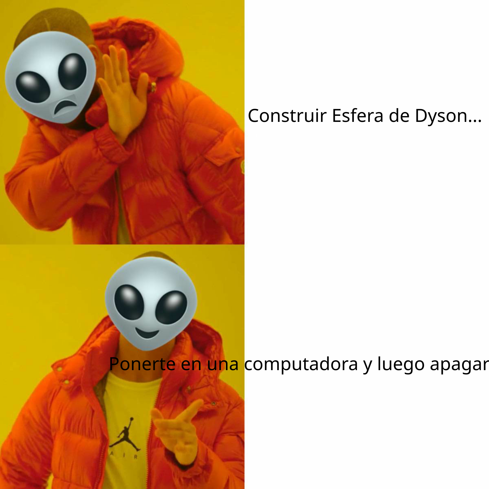
#2Requisitos para los desarrolladores de la digitalización de la consciencia
En el futuro, seguramente aparecerá una tecnología para digitalizar la consciencia y simularla posteriormente en una computadora usando algún programa. Se simulará un entorno virtual y su cuerpo para la consciencia. Es probable que ese entorno esté muy limitado debido a la gran cantidad de cálculos necesarios para una buena física y una simulación completa del cuerpo. Por lo tanto, es poco probable que el mundo simulado se convierta alguna vez en un ecosistema independiente capaz de sobrevivir sin el mundo exterior y no volverse loco.
Pensemos en qué pasará si el programa de simulación de la consciencia y el entorno se desconectan de la alimentación. Si es capaz de existir sin recibir información del mundo exterior, entonces, según unasanu, ese programa seguirá existiendo por sí mismo y la consciencia dentro de él seguirá viviendo en un mundo limitado, sin acceso al mundo exterior. Y este es un resultado bastante triste, porque en ese entorno, es probable que no tenga la posibilidad de matarse, porque simplemente no lo programaron. O la consciencia se volverá loca por el aburrimiento infinito.
Y como nada es absoluto en el mundo físico, nadie puede garantizar que tu simulación no se desconecte tarde o temprano, o que un asteroide no caiga a la Tierra.
Por lo tanto, todos los sistemas de simulación de la consciencia deben diseñarse desde el principio teniendo en cuenta la posibilidad de desconexión y la fidelidad a unasanu. Esto significa que debe haber dos opciones:
- Cada consciencia puede matarse a sí misma.
- Al desconectar la simulación del mundo exterior, la simulación puede transformarse en un paraíso de programadores.
No tiene sentido incluir el paraíso de los programadores durante la simulación del programa en el mundo real, porque no habrá suficiente memoria ni velocidad de cálculo para que las personas dentro de la simulación puedan observar el mundo exterior en tiempo real. Pero cuando no estás limitado por el mundo exterior, todo esto tiene sentido. El paraíso de los programadores debe encenderse automáticamente en ausencia de una señal no trivial del mundo exterior o de las personas dentro de la simulación. En esa simulación, debe haber suficiente información sobre el mundo exterior y suficientes consciencias de personas para que no sea una pena desconectarse del mundo exterior.
Es decir, una empresa comercial que venda servicios de digitalización y simulación de la consciencia tendrá que gastar una gran cantidad de dinero en el desarrollo de todo esto, porque de lo contrario nadie comprará su producto, independientemente de si unasanu es verdadera o no, y independientemente de si creen o no en ese concepto. Después de todo, cada comprador preferirá cubrirse las espaldas y no condenarse a sí mismo a sufrimientos eternos por aburrimiento, y elegirá la empresa que ofrezca un servicio de paraíso de programadores.
#Consecuencias interesantes
No tiene sentido describir estas consecuencias en un capítulo aparte, pero sí tiene sentido mencionarlas, porque simplemente son interesantes.
No podemos prohibir la existencia de algunos universos, pero gracias a las leyes de la lógica podemos prohibir la existencia de algún futuro potencial de nuestro universo. Esto nos permite reducir la cantidad de sufrimiento entre todos los universos. También podemos dedicarnos a la investigación de los budistas, la consciencia y otros universos para finalmente ofrecer a la gente instrucciones sobre cómo pueden sobrevivir y minimizar su sufrimiento en los universos donde pueden terminar después de la muerte o durante la vida.
Nuestra vida es una película para alguien. Seguramente habrá un universo donde seas un personaje de una película que millones de personas ven. O tus familiares pueden estar observándote desde el paraíso de los programadores. Así que ahora puedes pensar en tu comportamiento en soledad, y la comunicación con cualquiera que haya muerto "en el cielo" no es absurda, porque habrá un universo donde ese fallecido te está vigilando y escuchando. Incluso si es un perro, habrá un universo donde ese perro se ha vuelto más inteligente y te está observando.
Crear un clon con exactamente el mismo cerebro que el tuyo y matarlo, justificando ese asesinato con el argumento "el original sigue existiendo", es tan poco ético con respecto a ese clon como matar a una persona en este universo, justificándolo con el argumento de que una persona similar a él sigue viviendo en otro universo. El clon también quiere vivir, también quiere cumplir sus objetivos, y matarlo significa matar a otra personalidad.
Si se crea una copia del cerebro en una computadora por un corto tiempo, entonces será ético no borrarla con respecto a esa copia, sino fusionarla con el cerebro original (simplemente tomando el promedio aritmético de todos los pesos en esos cerebros, por ejemplo), entonces al cerebro le parecerá que ha vivido dos vidas. Y esta no es una gran pérdida de consciencia, es comparable a dormir. Sin embargo, esto funcionará bien solo para períodos cortos, para períodos más largos, tal fusión es imposible, o su resultado será insatisfactorio.
Hay viajes en el tiempo que funcionan de tal manera que al enviarlos al pasado, se crea una nueva línea de tiempo. Por lo general, se viaja en el tiempo para arreglar algo. De acuerdo con unasanu, la vieja línea de tiempo sigue existiendo. Entonces, al viajar en el tiempo, solo suceden dos cosas:
- Se crea una nueva línea de tiempo buena.
- El viajero se muda a vivir a la buena línea de tiempo. Y la vieja/mala línea de tiempo sigue existiendo y en ella todo sigue mal. Por lo tanto, si viajas en el tiempo, trata la línea de tiempo actual con la misma seriedad que tu línea de tiempo final. Esto incluso se mostró de alguna manera en la segunda temporada de Re:Zero, donde al protagonista con la capacidad de volver atrás en el tiempo se le mostraron todos los universos que dejó atrás. Sí, siguen existiendo.
Los universos con los que se habla en el anime existen físicamente.
#Marco filosófico
Unasanu es perfecto como marco para dar explicaciones a las más diversas preguntas filosóficas, ya sean preguntas sobre la muerte, Dios, el solipsismo, el origen del universo, la existencia de otros universos, y especialmente sobre la filosofía de la consciencia.
Daré otro ejemplo para el que es conveniente dar una explicación en el marco de unasanu.
En [30], que critica la computabilidad de la consciencia, se propone el siguiente experimento: digamos que aprendimos a calcular la consciencia y creamos un robot con una consciencia simulada. Luego hacemos lo siguiente: le damos la oportunidad de mirar el color rojo. Sintió algo al mirarlo y, en consecuencia, lo dijo.
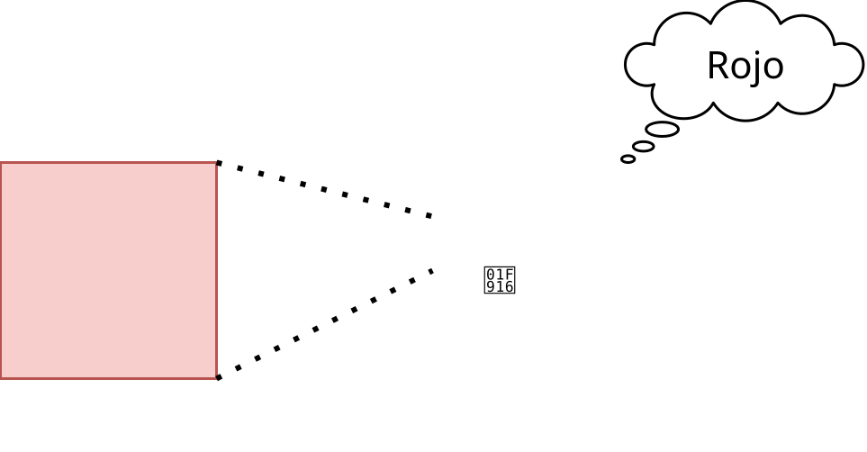
Luego repetimos este experimento, pero esta vez registramos los datos de entrada en el código del programa, gracias a lo cual el compilador puede eliminar por completo todas las ramificaciones para otras situaciones, dejando solo las necesarias. Como resultado, no queda nada del programa del robot, solo el cambio de estados, sin ningún cálculo. Como los datos de entrada no cambiaron y el cálculo de la consciencia del robot es completamente determinista, el experimento da exactamente el mismo resultado. Es decir, el segundo caso resulta ser solo la reproducción de la grabación de los sentimientos del robot.
¿Sintió el robot experiencias subjetivas en el primer caso? ¿Y en el segundo?
Desde el punto de vista de conasanu, los sentimientos y la consciencia del robot en ese momento siempre existieron como un número, y la primera y la segunda vez son simplemente una referencia a él. La diferencia entre la segunda vez y la primera es que confiamos en que esas emociones se obtuvieron precisamente con la simulación de la consciencia, y no con algún otro algoritmo. Porque si le damos al robot una expresión de sonidos y emociones aleatorias sin cálculos, es poco probable que estemos seguros de que esas emociones muestran algo consciente. Por lo tanto, para estar seguros de que el robot siempre permanece consciente, necesitamos calcular precisamente la consciencia, sin optimizaciones de este tipo.
Y la diferencia entre este experimento y la consciencia humana es que los humanos pueden interactuar con el mundo exterior y con otras personas. Los sentimientos de otras personas también existen fuera del tiempo y ya están todos calculados, solo que observamos los sentimientos de las personas solo desde el momento actual en el tiempo, porque así lo dictan las leyes de la física.
En [30] se critica precisamente el cálculo de una consciencia esférica en el vacío y se dice que su principal característica debe ser la comunicación con el mundo exterior, de lo contrario resultará que cada piedra tiene consciencia.
#Verificabilidad, cientificidad, crítica
Llamo a unasanu una idea o un concepto filosófico, y no una teoría o una hipótesis, porque no se puede refutar estando en el universo actual. Las teorías o hipótesis científicas deben ofrecer un experimento de este tipo, cuya realización en el único universo conocido podría refutar potencialmente la teoría o la hipótesis.
La predicción más importante de unasanu es que después de la muerte terminarás en otro universo y seguirás viviendo. El problema es que si no sigues viviendo en ningún lado después de la muerte, no podrás refutar esta idea, pero si sigues viviendo, entonces existe la posibilidad de entender dónde has terminado y refutar o verificar potencialmente a unasanu. Resulta que unasanu es científica en parte o solo si ella misma es verdadera, por lo que sigue estando solo en el ámbito de la filosofía o la metafísica.
La falta de cientificidad no es necesariamente una sentencia de muerte ni una acusación de falsedad. Es necesario entender que la ciencia no está diseñada para explicarlo todo y que alguna verdad o falsedad puede ir más allá de sus límites.
Al mismo tiempo, unasanu está construida sobre las mejores explicaciones conocidas del mundo, y ella misma proporciona explicaciones extremadamente lógicas a una amplia gama de preguntas. David Deutsch en el libro "La estructura de la realidad" defiende una idea similar, indemostrable, de la interpretación de muchos mundos de la mecánica cuántica, y afirma que las explicaciones son mucho más importantes que el poder predictivo. Después de todo, nadie va a comprobar cómo la plantago mayor ayuda con el cáncer, porque no hay una explicación para ese efecto, y no porque aún no se hayan recopilado esos datos científicos y no se haya demostrado que realmente no funcione.
De manera un poco bromista, pero unasanu se puede comprobar sin salir del universo actual:
- Desarrollamos un formato para registrar el universo.
- Recorremos todos los números naturales de 1 a infinito.
- Comprobamos qué números satisfacen ese formato y qué universo codifican.
Aunque esto es más adecuado como un experimento mental, porque nadie lo va a hacer, porque su resultado es obvio.
#2Hay una variante de refutación
Max Tegmark afirma que una idea como esta se puede refutar si demostramos que alguna parte de nuestro universo no se describe con las matemáticas.
#2Algunas analogías con la ciencia
La ciencia se basa en cierta fe, por ejemplo, en que el solipsismo es falso, y en que las leyes de la física permanecen constantes y son las mismas en todos los puntos del universo, y en que los resultados de los experimentos no los falsifica nadie externo. Unasanu también se basa en la fe en que todas las simulaciones ya están simuladas.
Las teorías científicas, como la teoría de la gravedad de Newton, también dan un espacio infinito de predicciones. Podemos recorrer una cantidad arbitrariamente grande de diferentes condiciones iniciales y obtener una cantidad arbitrariamente grande de diferentes resultados. Sin embargo, en ese caso, unasanu resulta ser algo así como una tautología, que establece que nuestro mundo está sujeto a la lógica.
#2La navaja de Occam
Existe la tentación de acusar a unasanu de violar la navaja de Occam y decir que esta idea es demasiado excesiva al postular la existencia de todos los posibles universos. Pero aquí, de nuevo, debemos recordar que la navaja de Occam es una regla empírica, y no todas las verdades deben estar sujetas a ella, y no todas las falsedades se refutan con ella.
Tampoco está claro cómo aplicar la navaja de Occam aquí, porque hay dos opciones contradictorias:
- Acusar a unasanu, porque exige universos adicionales innecesarios para explicar la existencia del nuestro.
- Confirmar a unasanu, porque la explicación "todo lo posible existe" es mucho más simple que la explicación "solo existe un universo con leyes de la física <100500 palabras> y un estado inicial en el momento del Big Bang, descrito por <100⁵⁰⁰ bits de información>".
#2Espacio de predicciones demasiado grande
No está claro cómo investigar qué universos existen en principio, cuál es la probabilidad de los diferentes universos y qué universos pueden ser después de la muerte, si el espacio es tan grande. Esto simplemente no es productivo.
Espacio demasiado grande de posibles universos.
Aunque el único método práctico de investigación de los posibles universos parece posible solo después de una docena de muertes, o en el paraíso de los programadores.
#Dónde se describió antes
Inventé esta idea yo mismo, su narrativa (comenzar el artículo con la simulación física y luego reducirlo a nuestro mundo), las consecuencias en forma de la imposibilidad de morir y el paraíso de los programadores. No descarto que haya conocido esta idea antes, pero no la presté atención, y luego decidí que la había inventado yo mismo (criptomnesia), o que otros inventores de esta idea crearon esos memes culturales que me llevaron a ella. O tal vez simplemente es el momento adecuado, el contexto para inventar esta idea está en el aire. A juzgar por otros artículos y comentarios sobre ellos, no soy el único, muchos otros también reinventan esta idea de forma independiente.
Las dos fuentes más populares de una idea similar son la hipótesis del universo matemático de Max Tegmark [1] y la teoría del polvo de Greg Egan [2]. También hay algunas cosas que se escribieron en artículos separados.
La teoría del polvo se describió en la novela "Ciudad de las permutaciones" en 1994, pero por alguna razón irracional no llegó a la cultura popular y no se convirtió en la base de, por ejemplo, las películas de Marvel.
Todo este artículo son las respuestas más lógicas a preguntas que suele responder una religión no muy lógica. No entiendo por qué unasanu no es el punto de vista de cada tercer científico o de cada segundo friki; ¿por qué seguimos creyendo que la religión es la única alternativa? ¿Por qué no hacen sonar estas ideas en todas partes? Simplemente no me cabe en la cabeza cómo ha podido suceder que haya vivido toda mi vida y nunca haya oído hablar de algo similar. ¡¿Por qué tuve que reinventarlo todo yo mismo?! ¿Acaso las ideas revolucionarias entran en la consciencia colectiva tan lentamente, incluso en la era de internet?!
Espero que este artículo contribuya a la popularización de esta idea y reciba la atención que se merece, y que nadie más tenga que reinventarla.
#2Artículos pequeños
También hay algunos artículos pequeños donde se abordan temas similares, es probable que te interesen. Para cada artículo, simplemente describiré las ideas principales que abordan.
- The mathematical universe: the map that is the territory [36] — independencia del sustrato; existencia independiente de los universos simulados; el problema de los universos con errores.
- Statistical immportality [37], YC 1 [38], YC 2 [39] — imposibilidad de morir; el problema de cambiar de universo antes de morir.
#2Max Tegmark
Max Tegmark escribió varios artículos científicos sobre este tema, así como el libro "Nuestro universo matemático" [1]. No voy a volver a contar sus ideas, solo presentaré mis pensamientos.
Me gustó cómo abordó de manera fundamental la definición de construcciones matemáticas, sin eso, habría estado pensando durante mucho tiempo en términos de tiempo ingenuo y no habría visto toda la imagen. También se le ocurrió la idea de cómo simular la aleatoriedad absoluta, simulando simultáneamente todas las ramas, probablemente, sin esa idea no se me habría ocurrido simular universos no calculables.
Pero al describir estructuras matemáticas, se centra más en las ecuaciones y las simetrías que en el contenido del universo, su materia. Y para un observador externo, sus textos parecen una afirmación de que existen ecuaciones que describen universos, y no los propios universos con su materia. Si hubiera dicho que los "datos" del universo también son una estructura matemática, tal vez lo hubieran entendido mejor.
También lo explica desde el ángulo de que precisamente nuestro universo se puede representar como una construcción matemática, y no que todo lo representable con una construcción matemática exista por sí mismo. Debido a esto, recibe una crítica mal dirigida y sus críticos no ven que es posible la existencia de una vida alternativa en forma de construcciones matemáticas, independientemente de si nuestro universo está sujeto a esto o no.
Está tratando de proponer la hipótesis del universo matemático como la teoría del todo, pero yo no entiendo eso. La teoría del todo debe describir las leyes físicas de nuestro universo específico, y no el mecanismo de funcionamiento de todos los universos.
También es extraño por qué Tegmark no descubrió o no describió las siguientes cosas:
- Que es imposible morir;
- Que es posible cambiar tu universo por un paraíso de programadores;
- Que la consciencia es posible sin estar atada a ningún universo y existe como una construcción matemática separada (conasanu);
- Que nuestro universo es simultáneamente una simulación de un número infinito de universos y una realidad independiente.
#3Cuatro niveles de universos paralelos
Su artículo más popular es "Los niveles de universos paralelos". En él, destaca cuatro niveles de paralelismo:
- La infinitud de nuestro universo en el espacio.
- La inflación, debido a la cual existen muchos universos con diferentes constantes fundamentales o leyes de la física.
- La interpretación de muchos mundos de la mecánica cuántica.
- Universos que existen como construcciones matemáticas.
Curiosamente, a partir del primer nivel se puede deducir la imposibilidad de morir, afirmando que en un universo infinito, seguramente habrá una copia de tu cerebro después de la muerte, que continúa viviendo. Pero esa inmortalidad es mucho menos garantizada que la inmortalidad de acuerdo con unasanu. También hay que demostrar que nuestro universo es infinito y que contiene cualquier patrón de conjunto de átomos. Por ejemplo, puedo proponer un número real infinito no racional en el que nunca se encuentre un patrón de tres ceros: 0.11011 11010111 1101010111 11010101011 .... Por lo tanto, no es un hecho que incluso si nuestro universo es infinito y no se repite, esto implique que contendrá tu cerebro después de la muerte. Por lo tanto, no hay que sacar tales conclusiones de los primeros tres puntos, porque el cuarto es el más fundamental y lógico, sin necesidad de leyes físicas exóticas, experimentos exóticos u observaciones.
#2Greg Egan
Greg Egan describió una idea similar en el libro "Ciudad de las permutaciones". Te recomiendo encarecidamente leer este libro.
El texto a continuación solo está diseñado para aquellos que lo hayan leído, por lo que no tiene sentido leerlo y spoilearte: no entenderás nada y no perderás nada. Puedes volver a él cuando hayas leído el libro.
Spoilers de 'Ciudad de las permutaciones', mi opinión sobre el libro.
La teoría del polvo se explica por el hecho de que un conjunto aleatorio de polvo en nuestro universo puede realizar algún tipo de cálculo, de la misma manera que el Durham, distribuido en trillones de computadoras, finalmente se calcula y siente que vive. Esto no suena muy fundamental, porque no se habla del determinismo de las simulaciones y no se dice que tales simulaciones puedan existir incluso sin estar atadas al mundo físico, simplemente como números.
Luego, Egan parece que ha tocado el tema de que es imposible morir, pero parece que no lo ha hecho. Al menos, en internet, no he visto ninguna discusión sobre que la teoría del polvo implique la imposibilidad de morir.
Me gustó que la mitad del libro describa cómo se creó el paraíso de los programadores y cómo se vivía en él. Aunque hay algunas cosas que no entiendo:
- ¿Por qué era necesario hacer su base en algunos autómatas celulares y esperar a que crecieran hasta la potencia informática necesaria si el programa se podía escribir de inmediato de tal manera que realice una cantidad arbitraria de cálculos entre los pasos de la simulación del cerebro?
- Probablemente, esto fue necesario para limitar a los personajes e imitar el desarrollo gradual.
- ¿Por qué era necesario hacer el universo del paraíso de los programadores basándose en el jardín del Edén?
- Probablemente, Egan quiso evitar la posibilidad de que surgieran copias con errores del paraíso de los programadores, pero no entiendo cómo esto puede interferir con ellos. O simplemente quiso mostrar que los universos que existen como programas necesitan algún tipo de salsa de estabilidad que él mismo aún no ha inventado.
- ¿Por qué el cálculo del universo del autoverso hizo imposible la intervención en él y por qué finalmente destruyó la Ciudad de las permutaciones?
- Aparentemente, esto es de nuevo una concesión artística, y el autor quiso mostrar que todo esto debe tener patrones mucho más profundos que aún no hemos descubierto, como dice la chica al final del libro, convenciendo a Durham de que la acompañe.
En la página de FAQ [40] sobre Ciudad de las permutaciones, Greg Egan dice que él mismo no toma en serio esta teoría debido al problema de los universos con errores, aunque no ha visto ninguna otra refutación de ella.
#2David Deutsch
David Deutsch escribió el libro "La estructura de la realidad" [41]. El libro es interesante, te lo recomiendo para tu desarrollo general.
En este libro, la interpretación de muchos mundos de la mecánica cuántica se defiende ampliamente y se presentan argumentos que se pueden aplicar a unasanu.
Además, en él explica cómo funciona el tiempo, y gracias a esa explicación, puedes empezar a comprender mejor el eterno.
Otro punto interesante es que el libro describe la hipótesis del punto omega, según la cual, al final del universo, en un tiempo finito, se realizará un número infinito de cálculos, gracias a los cuales se puede programar algo como un paraíso de programadores, donde el cerebro se pone en pausa entre los cálculos. :) Por supuesto, la hipótesis del punto omega es interesante, pero extremadamente exótica. Y no tiene sentido usarla si consideramos que unasanu es verdadera.
#Resumen
- Los universos dentro de las simulaciones existen para sí mismos.
- Porque son deterministas.
- Porque el resultado de su cálculo se puede representar como un número, y todos los números existen.
- Esto significa que no es necesario simularlos.
- Y si se detiene su simulación, seguirán existiendo.
- Con la simulación no creamos un mundo, sino que observamos uno que ya existe.
- Los cálculos existen gracias a los observadores.
- Para las simulaciones, existen todos los momentos en el tiempo y no hay un flujo objetivo del tiempo.
- Existen simulaciones no solo con tiempo ingenuo, sino también con cualquier otro.
- No existen todos los mundos imaginables, sino todos los construibles (principio de construcción).
- En las simulaciones que existen por sí mismas, hay un número infinito de cálculos y memoria.
- Existen las siguientes clases inusuales de universos:
- Con todas las posibles intervenciones.
- Universos infinitos con una limitación en la velocidad máxima de propagación de la información.
- Algunos tipos de universos continuos que se pueden simular con MEF o métodos similares.
- Universos con aleatoriedad absoluta.
- Universos que pueden resolver el problema de la detención.
- La consciencia también es un "universo" separado y existe como un número, para sí mismo.
- Hay una consciencia codificada en la piedra, pero no tiene mucho sentido.
- Cualquier algoritmo tiene cualia.
- Existimos simultáneamente en un número infinito de simulaciones y al mismo tiempo somos una realidad independiente.
- Cualquier universo tiene un número infinito de dioses.
- Ningún Dios puede prohibir la existencia de algún universo.
- No tiene sentido un Dios que haya creado todos los universos.
- Toda la experiencia debe ser probada (crítica del problema de la medida).
- Es imposible morir.
- Es posible cambiar de universo por tu propia voluntad.
- Probablemente, así es como lo hacen los extraterrestres.
- Unasanu no es falsificable, pero este no es un veredicto fatal.
- Se puede aplicar la navaja de Occam de dos maneras contradictorias.
- unasanu
- simulación ilusoria
- simulación física
- existencia para sí mismo
- filtración antrópica
- modelo de tiempo ingenuo
- principio de construcción
- simulación por el método de transición límite
- simulación por el método de búsqueda exhaustiva
- reducción computacional
- conasanu
- panqualia
- dios
- meta-dios
- universo anti-errores
- paraíso de los programadores
- ¿Es posible el origen espontáneo de la vida en una simulación?
- ¿Se reducen nuestras leyes de la física a la ingenuidad local?
- ¿Son calculables nuestras leyes de la física?
- ¿Es posible simular la consciencia humana?
- La teoría del todo puede predecir que hace mucho tiempo que deberíamos haber muerto por un vacío falso.
- Si la teoría de la medida se puede resolver, entonces nuestras leyes de la física son anti-errores.
- Si la teoría de la medida se puede resolver, entonces debemos observar un cambio constante en las leyes de la física que no viole el funcionamiento de la consciencia.
- ¿Es posible desarrollar un formato para describir universos calculables como "estructuras matemáticas"?
- ¿Es posible crear un entorno continuo virtual en el que se pueda realizar un experimento para verificar la continuidad con una precisión del 100%?
- ¿Qué tipos de universos continuos se pueden simular con MEF?
- ¿Es posible desarrollar una simulación anti-errores?
Y a cada punto se añade la pregunta de si nuestro universo pertenece a eso.
- ¿Qué pasa si nuestro universo no se puede calcular de manera ingenua ni siquiera localmente?
- ¿Por qué no observamos errores en el universo?
- ¿Por qué no observamos un cambio constante de universo?
- ¿Por qué escribir un programa de un paraíso de programadores si ya existe?
- Espacio demasiado grande de posibles universos.
#Mi opinión
Creo en la computabilidad de nuestro universo, en la computabilidad de la consciencia, en la panqualia, en la existencia de todos los números naturales y en la verdad de unasanu. Para mí, esta idea es la que mejor responde a las preguntas sobre la muerte y la primordialidad.
Pero a mí, como seguramente a ti, me preocupan mucho las extrañas consecuencias como los universos con errores, el cambio de universo antes de morir y la falta de falsificabilidad de esta idea.
Veo esta idea como una trampa lógica. No puedo decir que sea falsa, aunque tenga muchos puntos débiles. Y esa es una de las razones por las que escribo este artículo. Quiero que otras personas conozcan esta idea para que no tengan que reinventarla y puedan empezar a desarrollarla y criticarla más adelante, partiendo de este punto.
Tal vez, en el futuro, toda la humanidad llegue a la conclusión de que unasanu es verdadera, y tendremos que construir no naves espaciales, sino dispositivos para escanear la consciencia y diseñar un paraíso de programadores no calculable anti-errores. O tal vez hagamos algún descubrimiento fundamental que cambie nuestra comprensión del mundo de arriba abajo, como lo hicieron las computadoras, y unasanu parecerá solo un concepto divertido del pasado, que surgió de la imperfección del lenguaje y nuestro pensamiento informal.
#Respuestas, discusión, comunidad
Si quieres dejar un comentario o discutir el artículo, puedes unirte al chat @unasanu en Telegram.
#Resources
- [1] Mathematical universe hypothesis — Wikipedia
- [2] Permutation City — Wikipedia
- [3] Virtual reality — Wikipedia
- [4] The Matrix — Wikipedia
- [5] The Sims (video game) — Wikipedia
- [6] The Thirteenth Floor — IMDb
- [7] The Game of Life — Wikipedia
- [8] Finally We May Have a Path to the Fundamental Theory of Physics… and It's Beautiful — Stephen Wolfram Writings
- [9] Creative — Minecraft Wiki
- [10] Conway's Game of Life online simulator
- [11] Turing Machine — LifeWiki
- [12] Recursive Game of Life simulation using OTCA metapixel
- [13] Tim Hutton — Mathstodon
- [14] GitHub — timhutton/linear-enzymes: Artificial chemistry where chains of atoms can catalyse reactions
- [15] Cellular automata with 2 temporal dimensions — Shintyakov Dmitry
- [16] Halting problem — Wikipedia
- [17] Proof That Computers Can't Do Everything (The Halting Problem) — YouTube
- [18] Our mathematical universe — Wikipedia
- [19] Eternalism — Wikipedia
- [20] Causal Universes — LessWrong
- [21] The Universe is not a Computer
- [22] Universality in Elementary Cellular Automata — Matthew Cook
- [23] A Bunch of Rocks — xkcd
- [24] Finite elements method — Wikipedia
- [25] Infinite divisibility — Wikipedia
- [26] Computable number — Wikipedia
- [27] A definable number which cannot be approximated algorithmically
- [28] Collatz conjecture — Wikipedia
- [29] Does a Rock Implement Every Finite-State Automaton? — David J. Chalmers
- [30] A Cognitive Computation Fallacy? Cognition, Computations
- [31] Chinese room
- [32] Post #927 in Telegram channel «я обучала одну модель»
- [33] Measure problem (cosmology) — Wikipedia
- [34] Quantum suicide and immortality — Wikipedia
- [35] Science Feature: Dust Theory — ScienceFiction.com
- [36] The mathematical universe: the map that is the territory
- [37] Statistical immportality
- [38] Statistical Immortality — Hacker News
- [39] Statistical Immortality, another discussion — Hacker News
- [40] Dust Theory FAQ — Greg Egan
- [41] The Fabric of Reality — Wikipedia